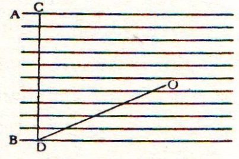

Sagredo – Doğrusu ya ben bu sözlerdeki zekâya yapılmış hakareti içime sindiremiyorum Evren’i oluşturan doğal cisimlere değişimsiz, bozunmasız vb. gibi büyük soyluluk ve mükemmellik niteliklerinin yakıştırılmasına karşılık yeryüzüne değişimli, üreyişli vb. sıfatlarla büyük kusurlar yüklenmesine; ben kendi hesabıma Yerküre’ye kesintisiz geçirdiği birçok değişim, üreyiş oluşumu gibi durumlardan ötürü büyük soyluluk ve hayranlık layık görüyorum ve herhangi bir değişimden geçmediği takdirde engin bir yalnızlık arenası ya da bir kristal kütlesi olsaydı ya da tufan sırasında onu kaplayan sular buzlanıp hiçbir şeyin doğmadığı, değişmediği, üremediği kocaman bir kristal küre kalsaydı ben onu bir miskinlik küresi sayardım ve kısacası fuzuli bulurdum; doğada sanki mevcut değilmiş gibi ve canlı bir hayvanla ölü bir hayvan arasındaki fark gibi bir fark gözetirdim. Aynı şeyi Ay için, Jüpiter için ve Evren’in diğer tüm cisimleri için de söylüyorum. Halk arasında geçen boş konuşmaları aklıma getirdikçe onları o denli hafif ve anlamsız buluyorum. Elmas gibi taşları, gümüşü ve altını kıymetli niteleyip de toprağı ve çamuru aşağılayan zihniyet kadar budalalık olabilir mi? Bunlar nasıl akıllarına getirmiyorlar ki ziynet eşyası ya da çok değer verilen kıymetli metallerin azlığı kadar toprak azlığı olsaydı bu dünyada, bir toprak parçası sahibi olabilmek, orada yasemin yetiştirmek, Çin portakalı dikmek, bunların o toprakta yetişmesi, büyümesi, kokulu çiçekler açması, meyveler vermesi için hangi hükümdar elmaslarını, yakutlarını ve altınlarını vermezdi? Demek ki bolluk ve nedret halk arasında eşyanın değerini belirliyor. Sonra tutup o elmas parçası saf, saydam bir su damlasına benzediğinden çok güzel derler, fakat on testi su karşılığında vermeye razı olmazlar. Bozunmazlığı, değişmezliği yüceltenler, sanırım daha uzun yaşama isteği ve ölümden duydukları korku nedeniyle buna başvuruyorlar ve şunu göz önünde bulundurmuyorlar ki insanlar ölümsüz olsalardı onlara bu dünyaya gelmek de nasip olmazdı. Bu gibiler olamadıkları oranda[41] mükemmellik peşinde olduklarından, elmas ya da pırlanta heykeline dönüşüp bir Medusa başı olmaya layıktırlar.
Salviati – Böyle bir değişim onların lehine bir metamorfoz oluştururdu; çünkü konuşmamaları, tersini söylemelerinden daha iyidir.
Simplicio – Yerküre değişen, bozunan vb. niteliklere sahip bulunmasına rağmen şüphesiz ki bir taş kütlesi, hatta aşınmaz ve sertçe bir elmas kütlesi olmasına kıyasla bile daha mükemmeldir. Fakat bu koşullar Yerküre’ye ne derece soyluluk getirirse aynı derecede gökcisimlerini mükemmellikten uzaklaştırırdı. Bu koşullar gökcisimleri için fuzulidir. Çünkü Yerküre’nin hizmetinden başka bir iş için düzenlenmemiş olan bu gökcisimleri yani Güneş, Ay ve diğer yıldızlar, işlevlerini yerine getirmek için hareket etmek ve ışık vermekten başka bir amaca yönelik değillerdir.
Sagredo – Bu durumda engin büyüklükteki bunca mükemmel ve soylu, bozunmayan, değişimsiz, ilahi gökcismini doğa, bozunan, değişime uğrayan ve fani Yerküre’nin hizmetine mi adadı? Evren’in murdar yeri, çöplük yığınağı dediğiniz yerin hizmetinde mi? Peki, gökcisimlerini ölümsüz vb. kılmak niye? Fani vb. bir cisme hizmet için mi? Yeryüzüne hizmet amacı aradan kaldırıldı mıydı, tüm gökcisimlerinin sayısız ordusu yararsız ve fuzuli duruma geçmiş olurdu; aralarında hiçbir etkileşim söz konusu olmadığına ve olamayacağına göre; çünkü hepsi de değişime uğramayan, bozunmasız, tükenmez, ölümsüzdür. Örneğin, eğer Ay değişimsiz bir cisimse Güneş ya da başka bir yıldız neden onu boşu boşuna etkilesin? Yalnızca bakarak ya da zihin jimnastiğiyle kocaman bir altın kütleyi sıvılaştırmaya niyetlenmekten daha etkisiz bir eyleme benzerdi bu etki. Öte yandan, bana öyle geliyor ki gökcisimleri yeryüzündeki üreyişlerin ve değişimlerin oluşumunu etkilemekte elbirliği ederlerken onların da değişimli cisimler olduğunu düşünmek zorunluluğu doğuyor. Aksi halde Ay’ın ya da Güneş’in yeryüzündeki üreyişlere etkisi, bir gelinin yanı başına mermerden bir heykel bırakarak bu beraberlikten evlat sahibi olmayı beklemesi gibi bir durumdan farklı olabilir miydi, anlamıyorum.
Simplicio – Bozunurluk, değişim vb. Yerküre’nin tümünde değil. Yerküre, bütünlüğü itibariyle Güneş’ten ya da Ay’dan daha az ebedi değildir, fakat dış kısımları itibariyle üreyiş ve bozunma geçirir. Şu da gerçek ki kısımlarında üreyiş ve bozunma süreklidir; gökcisimlerinin ebedi etkilerine muhtaçtırlar ve bu nedenle gökcisimlerinin ebedi olmaları şarttır.
Sagredo – Konuşmalar iyi gidiyor; eğer yüzeydeki kısımların bozunması Yerküre’nin tüm olarak ebediliğini korumasına engel değilse ve hatta bu yüzden üreyişli, değişimli, bozunmalı oluşu ona şan bahşediyor ve mükemmellik kazandırıyorsa siz de gökcisimlerinin dış kısımlarında aynı şekilde değişim, üreyiş, vb. olduğunu kabul edemez misiniz? Kabul etmeniz gerekmiyor mu? Onların şanını artırarak, mükemmelliklerini azaltmadan ya da işlevlerini inkâr etmeden, hatta yalnızca Yerküre’ye etki yapmakla kalmayıp kendi aralarında da hepsinin karşılıklı işlev yerine getirdiğini, bu arada Yerküre’nin de onlara karşı işlev ifa ettiğini kabul edip şana şan eklemiş olmaz mısınız?
Simplicio – Bu olamaz, çünkü üreyiş, değişim, bozunma vb. örneğin Ay’da olsa yararsız ve boşuna şeyler olurdu, “et natura nihil frustrat facit.”[42]
Sagredo – Peki neden yararsız ve boşuna olurdu?
Simplicio – Çünkü biz görüyoruz ve elimizle dokunuyoruz yeryüzündeki tüm üreyiş ve değişimlere vb. hepsine, ya doğrudan ya dolaylı olarak... Bunlar insanoğlunun kullanımı, rahatı ve iyiliği için hazırlanıyorlar; insanların rahatı için atlar doğuyor, atların besini olarak toprak saman üretiyor, bulutlar da suluyorlar; insanların rahatı ve besini için ot, tahıl, meyve, yaban hayvanları, kuşlar, balıklar. Tüm bunları akıllıca ele alıp çözmeye çalışırsak hangi hedefe yönelik olduklarını buluruz: ihtiyaca, yarara, insanların rahatına... Acaba Ay’da ya da başka bir gezegendeki üreyişler insanoğluna nasıl yararlı olur, onlardan nasıl yararlanılır? Eğer siz Ay’da insan bulunduğunu ve oradaki meyvelerin zevkine vardıklarını telaffuz etmek istiyorsanız tabii, masalsı ya da boş bir fikir işte.
Sagredo – Ay’da ya da başka bir gezegende ot, ağaç ya da bizdekilere benzeyen hayvan yetiştirdiklerini, yağmur yağdığını, Yerküre etrafında olduğu gibi rüzgâr ve gök gürlemesi olup olmadığını bilmiyorum ve sanmıyorum, insan yaşadığını da hiç sanmıyorum. Fakat bizimkilere benzer şeyler üretilmiyor diye hiçbir değişime uğramadığı sonucunu da çıkaramayız. Bizimkinden yalnızca değişik değil hayal bile edemeyeceğiniz, akla hayale gelmeyecek şeylerin üremediğini, değişime uğramadığını, çözünmediğini söyleyemeyiz bile. Çok geniş bir ormanda, yaban hayvanları ve kuşlar arasında doğup orada besinlerini bulan biri su elementini hiç tanımasa topraktan farklı bir başka dünyanın varlığını hayal edemezdi, onu aklına getiremezdi. Suyun içinde bacaktan ve kanatlardan yoksun, hızla yürüyen ve yalnızca su üzerinde değil, yaban hayvanlarının toprak üzerinde yürümeleri gibi fakat derinliklerde yaşayan ve yalnızca yürümekle kalmayıp istedikleri an zınk diye durabilen, kuşların havada yapamadıkları bu hareketi kolayca yapan yaratıkları aklına getiremezdi. Sular üzerinde insanların saray kurar gibi şehirler kurduklarını ve seyahat etmekten zevk aldıklarını ve hiç yorulmadan ailelerini de evlerini barklarını da çok uzak ülkelere naklettiklerini tasavvur edemezdi; söylediğim gibi, hayal gücü çok derin bile olsa su elementini hiç bilmeyen biri balıkları, okyanusları, gemileri, deniz filolarını hiçbir zaman tasavvur edemez; aynı şekilde hatta daha kuvvetli nedenle, bizden böylesine uzakta ve muhtemelen bizimkinden değişik bir maddeden oluşan Ay’da öylesine maddeler bulunuyor ve bunların öyle işlevleri vardır ki bizim her çeşit hayalimizin dışında yaptıklarımızla benzerliği olmayan, bizce tamamen yabancı şeylerdir. Nitekim bizim bir şeyi hayal edebilmemiz ancak daha önce gördüğümüz bir şeyle ilintilidir ya da bir zamanlar görülmüş şeylerin, en azından o şeyin bir zamanlar görülmüş parçalarıyla ilişki kurarız, bunlar sfenksler, sirenler, hilkat garibeleri ya da insan başlı atlar vb.’dirler.
Salviati – Ben çok defa bu gibi şeyler üzerine hayal kurdum ve sonunda Ay’da olmayan ve olamayacak olan bazı şeyler bulduğumu sanıyorum. Ama hiçbirinin gerçekten var olduğunu ya da olabileceğini söylemek istemiyorum da ancak çok serbest ve geniş sınırlı bir genelleme çerçevesinde düşünülebilecek şeyler bunlar, Ay’ı yüceltici şeyler, Evren’in enginliğine ve güzelliğine hayran kalarak onun yaratıcısı ve dürüst yöneticisini aklıma getirerek, bizim buradakinden değişik bir şekilde yaşayarak, ne bileyim, onun şerefine ilahiler okuyarak, kısacası kutsal yazarlar tarafından sıkça beyan edildiği gibi tüm yaratıkların Tanrıyı sürekli zikretmeye dalmaları gereğini yerine getirmek gibi şeyler.
Sagredo – Bunlar pek geniş ve genel sınırlar içinde düşününce olabilecek şeyler; fakat ben Ay’da olmayan ve olamayacağına inandığınız şeyleri anlatmanızı çok isterdim. Bunlar özellikle daha çok anlatılabilecek şeyler olduğundan memnuniyetle dinlemek isterdim.
Salviati – Dikkat ettinizse Bay Sagredo, bu üçüncü defadır ki biz farkında olmadan ana sorunumuzdan adım adım uzaklaşmış bulunuyoruz ve bu gidişle yolumuzdan sapmalarla düşünce yumağımızın ucunu bulamayacağız. Daha önce de bazı konuları daha sonraki bir seansa bırakmayı vaat ettiğimiz gibi bu konuyu da öyle bir seansa bırakırsak iyi yapmış oluruz.
Sagredo – Hazır Ay’dayken, ona ait olan şeylerden hemencecik söz açalım ve bir daha bu konuya dönmek için bunca uzun yolu kat etmeyelim.
Salviati – Madem öyle istiyorsunuz, isteğinize uyalım. En genel şeylerden söze başlamak için ben Ayküre’nin Yerküre’den epey farklı olduğuna inanıyorum, her ne kadar aralarında bazı benzerlikler varsa da önce benzerliklerden söz edeceğim, sonra da farklı yanlarına geçeriz. Ay’la Yerküre arasında şekil benzerliği olduğu muhakkak. Ay hiç şüphesiz küre şeklindedir. Bunu daire şekilli disk olmasından ve Güneş’in ışığını alış biçiminden anlıyoruz. Eğer yüzeyi yassı olsaydı, her yanı aynı anda Güneş tarafından aydınlatılırdı ve sonra da aynı anda ışıksız kalırdı. Nitekim önce Güneş’i gören kısımlar aydınlanıyor sonra da diğer kısımlar... Öyle ki hilal durumunun tam karşıt durumu olan ve kavuşum karşıtı[43] dediğimiz dolunay halindeyken tamamen ışığa bürünüyor: Tarafımızca görülen diski tamamen ışık kaplıyor; daha önce ışık tamamını kaplamaz. Ay’ın görülen yüzeyi içbükey şekilli olsaydı tamamen tersi olurdu ve aydınlanma Ay’ın Güneş’e karşıt kısımlarında başlardı. İkinci olarak Ay, Yerküre gibi karanlıktır ve saydam değildir: opaktır. Ay opak olduğu içindir ki güneş ışığını alıp yansıtmaya uygundur. Ay eğer opak olmasaydı ışık yansıtamazdı. Üçüncü olarak Ay yüzeyinin, Yerküre’miz yüzeyinden hiç de aşağı kalmayacak derecede sert ve yoğun yapıda olduğunu düşünüyorum. Teleskop sayesinde fark edilebilen tümsekler ve çukurlar, yüzeyinin fazla tekdüze olmadığı kanaatini uyandırıyor bende. Sözünü ettiğim engebelerden epey var ve çoğunluğu bizim yeryüzündeki sert dağlara benziyor. Bazı bölgelerde sıradağlar yüzlerce mil uzunlukta. Bazıları da gruplar halinde birbirinden ayrılar; çok sayıda tepelere ve derin yarlara sahipler. Epey sıkça rastlanan rölyef görünümlü setler (başkaca bir benzetme aklıma gelmiyor bu kelimeyi kullanıyorum) var ki kaleleri çevreleyen setlere benziyorlar; bu setlerin çepeçevre sardığı ovaların ortasında epey yüksek dağlar bulunuyor. Bunlardan bazıları epey koyu maddeyle dolu olup bu madde büyük leke gibisinden çıplak gözle bile fark ediliyor.
Bunlar büyük çaplı olanlardır; sonra daha küçük çaplılar da var ki sayısı epey fazla olup bu setler de daire şekline sahiptirler. Dördüncü olarak şunu belirtebiliriz: nasıl ki bizim Yerküre’mizin yüzeyinde kara parçaları ve deniz olarak birbirinden belirgin farklılıkta iki ana bölüm varsa Ay diskinde de daha ışıltılı ve daha az ışıltılı olmak üzere farklı birkaç bölge söz konusu; bunların görünümleri için, güneş ışınları tarafından aydınlatılan Yerküre’mizin görünümüyle epey benzeşiyor diyebilir biri, eğer Ay’dan Yerküre’mize bakan biri olsaydı ya da Ay uzaklığı kadar uzaktan seyreden biri bulunsaydı... Ve deniz yüzeyi daha koyu, kara parçalarıysa daha aydınlık görünürdü.[44] Beşinci olarak da şunu söyleyeyim: Nasıl ki biz Yerküre’mizden Ay’ı tamamen aydınlık ya da yarısı aydınlık ya da yarısından fazla, yarısından az aydınlık ve bazen hilal biçimli görüyorsak ve bazen de Ay’ın bize dönük yüzünü hiç göremiyorsak, karanlıkta kaldığı içindir. Çünkü öbür yüzü tamamen Güneş’te kalmış durumdadır; Ay’dan da aynen öyle görünür Yerküre hemen hemen aynı periyotla ve aynı şekillere bürünerek Güneş’in Yerküre’mize vuran ışınları nedeniyle... Altıncısı...
Sagredo – Bu kadar hızlı gitmeyiniz Bay Salviati. Ay’dan bakacak biri, Yerküre’mizin aydınlatılışı sırasında aldığı çeşitli şekillerin, bizim Ay’a baktığımızda gördüğümüz ışıklı şekillerin uğradığı değişikliklere tamamen benzer değişmelere uğradığını görür diyorsunuz: Buraya kadar anlıyorum dediklerinizi, fakat aydınlanmanın aynı periyotla gerçekleşiyor gözükmesini anlayamadım. Çünkü Güneş’in Ay yüzeyini aydınlatma işlemi bir ay sürüyor, oysa Yerküre’mizi aydınlatma işlemi 24 saatte tamamlanıyor.
Salviati – Güneş’in bu iki cismi aydınlatması ve ışınlarıyla onların tüm yüzeyini tarayış işlemini Yerküre üzerinde 24 saatte geçiştirdiği oysa Ay’da 30 gün sürdürdüğü doğru; fakat Ay’dan bakıldığında Yerküre yüzeyinin aydınlanmış görünen bölümlerindeki değişmeler yalnızca bu işlemlere bağlı olmayıp Ay’ın Güneş karşısında geçirdiği pozisyon değişmelerine de bağlı. Şöyle ki şayet Ay pundu punduna Güneş’in hareketini izlese ve diyelim ki sürekli olarak Güneş ve Yerküre arasında kalsa yani bizim kavuşum[45] dediğimiz durumda bulunsa ve böylece hep Güneş’in gördüğü aynı yarıküreyi görse Yerküre’yi hep aydınlık ve ışıltılı görürdü. Şayet Ay hep karşı konumda, dolunay durumunda bulunsa Yerküre’yi hiç göremezdi. Çünkü Yerküre, Ay’a hep karanlıkta kalan yüzünü göstermiş olurdu yani karanlık dolayısıyla hiç göstermez olurdu yüzünü.
Oysa Ay dördün durumdayken,[46] görüşüne sunulmuş Yerküre yarıküresinin yarısı aydınlıktır ve Güneş’e dönük olmayan öbür taraf karanlıktadır. Bu nedenle Yerküre’nin aydınlanmış bölümü Ay’dan yarım daire şeklinde görülür.
Sagredo – Hepsini anlıyorum ve şunu da pekâlâ anladım ki Ay dolunay durumu olan karşı konumdayken ve bu vesileyle Yerküre’nin Güneş tarafından aydınlatılmış yüzeyinden zerre kadar bir kısım bile göremezken, günden güne Güneş’e yaklaştıkça ufak ufak görmeye başlar Yerküre’nin aydınlık yüzünden bölümleri ve Ay Yerküre’yi incecik bir hilal olarak görür, Yerküre’mizin de yuvarlak olduğu gerçeğini hesaba katarsak. Ay hareket eden bir cisim olması itibariyle günden güne Güneş’e daha çok yaklaştıkça, Yerküre’mizin aydınlanmış yarıküresinin daha çok ve daha çok bölümünü keşfetmeye koyulur ve dördün durumuna geldiğinde Yerküre yarıküresinin tam yarısını görür, tıpkı bizim de Ay’ın o kadarlık bölümünü görmemiz gibi. Kendisi kavuşuma doğru yolculuğuna devamla, Yerküre’mizin aydınlık tarafının daha da çoğunu keşfeder ve nihayet kavuşum gününe ulaştığında Yerküre’mizin aydınlık yarıküresinin tamamını görür. Ne anladığımı özetlemem gerekirse Ay’ın geçirdiği evreleri seyretmekte biz Yerküreliler’e ne nasip oluyorsa Ay’da olabilecek biri için Yerküre’yi aynı durumlarda görmek, fakat tersine bir sırayla mümkündür: Şöyle ki Ay ne zaman Güneş’in karşısına düşüp bize tabak gibi tamamen aydınlanmış (dolunay) görünürse Ay’daki biri, Yerküre kavuşum evresinde bulunduğundan tamamen karanlık bir Yerküre’ye bakıyor olur ve Yerküre’yi göremez; buna karşılık ne zaman ki Ay Güneş’le kavuşum durumuna gelip bizim için görünmez ve suskunsa Ay’daki biri, Güneş karşısında yarıküresi tabak gibi aydınlanmış bir Yerküre seyredebilir. Tümden aydınlık bir Yerküre “dolunay” sunar Ay’daki birine. Ve nihayet şunu söyleyelim: Bize, Ay yüzeyinin ne kadarlık kısmı evrelerine göre aydınlık sunuyorsa aynı anda Ay’daki birine Yerküre’nin o kadarlık kısmı karanlık yüzey sunar; bizim için de Ay’ın ne kadarlık bölümü ışıktan yoksunsa Ay’dakiler Yerküre’yi o miktar kadar aydınlık görürler. Yalnızca dördün evrelerinde Yerküre’dekiler Ay’ın yarı dairesini aydınlık görürler ve onlar da Yerküre’mizin o kadarını görürler. Bu karşılıklı işlemler sanıyorum yalnızca bir noktada birbirinden farklılık gösteriyorlar. O da şudur ki Ay’dan Yerküre’yi seyredecek kimse yok, ama olsa Ay’ın Yerküre etrafındaki 24 ya da 25 saatlik hareketi sırasında her gün Yerküre’nin tamamını görürdü; oysa biz Ayküre’nin yarısından fazla bölümünü hiçbir zaman göremeyiz; çünkü Ay kendi ekseni etrafında bize kendinin tamamını gösterebilmek için dönmesi gerektiği gibi dönmüyor.
Salviati – Sakın bu söylediğinizin tersi bir neden söz konusu olmasın? Yani Ay’ın kendi etrafında dönmesi nedeniyle biz Ay’ın diğer yarısını göremiyor olmayalım? Çünkü, aksi halde ancak ilmekli (episikl) harekete sahip olması gerekirdi. İyi de sizin ikaz ettiğiniz bu farklılık yerine neden diğer bir farkı göz ardı ediyorsunuz?
Sagredo – Nedir sözünü ettiğiniz bu diğer farklılık? Şu anda aklıma başka bir fark gelmiyor.
Salviati – Sözünü ettiğim farklılık şudur: Eğer Yerküre Ay’ın yarısından fazlasını, sizin de güzel bir hatırlatmayla belirttiğiniz gibi hiçbir zaman görmüyorsa ve Ay’daki biri bizim Yerküre’nin tamamını görüyorsa bu duruma göre şöyle bir şey var: Yerküre’nin tamamı için Ay’ı görme imkânı olmasına karşılık Ay’ın ancak yarı bölümü bizim Yerküre’nin tamamını görme imkânına sahiptir. Böylece Ay’ı tüm Yerküre’nin görebilmesine karşılık Ay’ın ancak yarısından Yerküre görülebiliyor. Bunun nedeni, Ay’ın bizim tarafımızdan görülmesi mümkün olmayan üst yarıküresinin sakinlerinin diyelim, Yerküre’yi görmekten mahrum olmalarıdır. Oranın sakinleri dediklerimize “Yerküre mahrumları” adını versek iyi olur. Fakat tam bu noktada aklıma bir şey geldi, bizim akademisyen dostumuzun Ay’da gözlemlediğini söylediği bir olgu. Bu gözlemin kaçınılmaz iki sonucu var: Bunlardan birincisi Ay’ın yarısından azıcık fazlasını[47] görmemizken, ikincisi de Ay’ın hareketinin bizim Yerküre’nin merkeziyle kesin ilişkisi olduğudur. Bu olgu ya da gözlem şöyle: Ay hep belirli bir yeriyle Yerküre’ye bakacak gibi orasını çevirmiş bulunarak doğal bir sempati ve ilişki içinde olduğuna göre, ikisinin merkezini birbirine birleştiren doğrusal çizginin Ay yüzeyinin hep aynı noktasından geçmesi gerekir; öyle ki Yerküre’nin merkezinden Ay’a bakan bir kimse her zaman Ay’ın aynı diskini, pundu punduna aynı dairesel sınır tarafından çevrelenmiş görecektir. Fakat Yerküre merkezinden değil de yeryüzeyinden bakan birinin gözünden hareket eden vizüel ışın Ayküre merkezine ulaştığında, Yerküre merkezini ve Ayküre merkezini birleştiren hattın geçtiği Ay yüzeyindeki aynı noktadan geçmez; meğer ki Ay, ona bakan kişinin tam tepesine dikey isabet etmiş olsun. Eğer Ay az doğuda ya da az batıda bulunuyorsa vizüel ışının ulaştığı nokta, merkezi birleştiren doğrusalın üst bölümüne isabet eder ve bu nedenle de Ayküre yarıküresinin üst çevresinin azıcık fazlası gözümüze ilişir. Gözümüze fazlalığın ilişmesi kadar yarıkürenin alt bölümündeki eksiklik de ilişir: İlişen fazlalık ve eksilen bölüm demekle Yerküre merkezinden bakılmış olması haline kıyasla demek istiyorum. Ay çevresinin doğarken üstte olan bölümü batarken alt tarata geldiğinden, üst ve alt taraf görüntüleri arasındaki farklılığın çok belirgin olması gerekir, çünkü bu iki kısımda açığa çıkan ve gizlenen ayrı lekeler ve kayda değer başka işaretler söz konusudur. Benzer bir değişikliğin, Ay’ın aynı diskinin kuzey ucu ile güney ucu arasında fark edilmesi gerekir, Ay’ın dahil bulunduğu fondaki ejderha şeklinin bu ya da öbür karnı içinde gözüktüğü zamana göre. Çünkü Ay, bulunduğumuz meridyenin kuzeyinde olduğu sırada, kuzeyindeki bazı bölümlerini bizden saklar, oysa güneyindeki bölümden açığa çıkan parçası olur. Sözünü ettiğim durumların gerçekleştiğini şimdi bize teleskop doğrulamakta ve bizi emin kılmaktadır. Nitekim Ay’da iki özgün leke var. Bunlardan biri, Ay bizim meridyenimizdeyken kuzeybatıya doğru bakar, diğer lekeyse hemen hemen 180 derece karşısına düşmektedir. Bunlardan ilki teleskopsuz da fark ediliyor, diğeriyse teleskopla. Kuzeybatıdaki leke yumurta biçiminde küçük bir leke olup diğer çok büyük lekelerden ayırt ediliyor; 180 derece karşısına düşen lekeyse daha küçüktür ve bu da diğer çok büyük lekelerden ayrılmış durumdadır ve epey aydınlık bir alanda bulunmaktadır. Her iki lekede de sözünü ettiğim farklılıklar iyice gözlenebilir türdendir; birbirinden keskin farklılıklar olarak gözümüze ilişiyorlar, bazen Ay diskinin kenarına yakın bazen uzağında görünüyorlar. Fark öyle oluyor ki kuzeybatıdaki leke ile diskin çevre kuşağı arasındaki mesafe bir defasında diğer defasından iki mislinden fazla olabiliyor. Diğer lekedeyse, ki bu leke çevreye daha yakındır, bu mesafe üç mislini de geçiyor. Bundan anlaşılıyor ki Ay manyetik gücün çekiciliğine kapılmışçasına Yerküre’mize sürekli olarak hep aynı yüzüyle bakıyor ve o yüzünü hiç ayırmıyor Yerküre’mizden...
Sagredo – Peki, hayranlık uyandıran bu güzelim aygıtla yapılan yeni tür gözlemler ve keşifler son bulur mu dersiniz?
Salviati – Eğer bununla kaydedilen ilerleme diğer büyük icatlarla el ele verecek olursa zamanla, şimdi görmeyi hayal bile edemediğimiz birçok şeyleri görmenin mümkün olacağını umut ediyorum. Fakat bizim konuşmamızın seyrine dönecek olursak, Ay ve Yerküre arasında altıncı uyum halinden söz etmek istiyorum. Nasıl ki karanlık gecelerimizde aydınlık eksikliğimizi gidermek için Ay, Güneş’in ışığını yansıtarak bize Ay aydınlığıyla yardımcı oluyorsa bizim Yerküre’miz de ona bu iyiliğin karşılığını veriyor: Yerküre’mizin yansıttığı güneş ışınları da Ay’ın yüzeyini aydınlatıyor, hem de Ay en çok ihtiyaç duyduğu sırada. Yerküre’mizin Ay’a sağladığı aydınlık da çok şavklı bir aydınlıktır, çünkü Yerküre’nin çapı Ay’ın çapından çok daha büyük olduğundan kanaatimce oraya yansıttığımız ışık daha güçlüdür.
Sagredo – Yeter, lütfen yeter Bay Salviati. Sizin bu son söylediğinizi duyunca bin defa düşünüp de kafamda çözemediğim bir sorunun cevabını bulduğum için, bırakın da bunun zevkini anlatayım size. Demek istiyorsunuz ki Ay’da, özellikle uçları orak biçiminde olduğunda orta bölümlerinde görülen o loş aydınlık, Güneş’in bize verdiği ışığı Ay’a yansıtmamızdan ileri geliyor. Yerküre’mizin gerek toprak gerekse denizlerinin[48] güneş ışığını yansıtmasından. Bu loş aydınlık Ay ne kadar ince hilal durumundaysa o kadar daha belirgin görülebiliyor; çünkü az önce anlatıldığı gibi Ay’ın o dönemlerinde Yerküre’mizin Ay’dan görülen aydınlığının en güçlü olduğu zamandır. Başka bir deyişle Ay’ın Yerküre’ye bakan bölümüne kadar karanlıksa o sıralarda Yerküre’nin aydınlık tarafı o kadar güçlü. Böylece Ay henüz hilal biçimindeyken yani Güneş’in ona verdiği aydınlık azlığından Ay karanlıkken Yerküre’mizin aydınlanan tarafı daha çok olduğundan Ay’a bizim yansıttığımız ışık yoğundur.
Salviati – Benim demek istediğim de tam buydu. Doğrusu ya anlayışlı ve değerlendirmesi akıllıca olan insanlarla konuşmak çok hoş, özellikle de gerçekler arasında gezinerek, tartışarak. Ben birçok kez öyle kalın kafalılarla karşılaştım ki sizin hemencecik anladığınız bu konuyu bin defa anlattığım halde öğrenmeleri mümkün olmadı.
Simplicio – Eğer siz, onları anlamaya ikna edemedim demek istiyorsanız buna çok şaşarım çünkü sizin anlatışınızdan bir şey anlamıyorlarsa başkalarından hiç anlayamazlar. Çünkü sizin anlatışınız açık ve seçik. Ama onları inandıracak kadar ikna edemedim diyorsanız o başka, buna şaşmam. Çünkü ben de sizin anlattıklarınızı anlayanlardanım fakat ikna olamıyorum, zihnimi rahatlatamıyorsunuz. Hatta bu konuda ve daha önceki altı benzerlik konusunda epey zorluklarım var. Siz konuşmanızı bitirdiğinizde benim de söyleyeceklerim olacak.
Salviati – Akıllı insanların yani sizin gibilerin itirazlarının gerçeklerin kazanımında yardımcı olması arzusu, anlatacaklarımın geri kalanını süratle sunmama yarayacak. Değineceğim yedinci benzerlik, Ay ve Yerküre arasındaki ilişkilerde cömert davranmak kadar cimrilik göstermelerindeki tutumda da kendini belli edişine ilişkindir. Şöyle ki Ay, kavuştuğu aydınlığın en zengin ve parlak dönemindeyken kendisiyle Güneş arasına sıkça olarak Yerküre’nin girmesinden ötürü ışıktan yoksun bırakılarak “Ay tutulması” olgusunu yaşar ve bunun acısını çıkarmak için Yerküre ile Güneş arasına girerek gölge yapıp Yerküre’yi karartır, ama Ay’ın intikamı, uğradığı tacize kıyasla küçük çaptadır. Çünkü Ay’ın epeyce sık olarak ve uzunca bir süre tamamen Yerküre’nin gölgesinde kalmasına karşılık, hiçbir zaman Yerküre’nin tamamı Ay’ın gölgesinde kalmadığı gibi bu olay sık da tekrarlanmaz. Buna rağmen boyunun ufaklığına bakmadan öbür büyük karşısında giriştiği işler nedeniyle gayretkeşliğinin boyutunu takdir etmek gerekir. Buraya kadar benzerliklerden söz açtım. Farklılıklara geçmek isterdim ama Bay Simplicio benzerlikler konusundaki kuşkularını dile getirmek istediğinden önce onu dinlemek, üzerinde düşünmek ve daha sonra ilerlemek daha iyi olur.
Sagredo – Tamam öyle yapalım, çünkü Bay Simplicio’nun Yerküre ve Ay arasında farklar bulunduğuna itiraz edeceğini pek sanmıyorum, zaten bu iki cismin yapısını farklı buluyor.
Simplicio – Yerküre ile Ay arasında paralellik kurmak için ortaya döktüğünüz benzerliklerden yalnızca ilkini ve diğer ikisini içime sindirebileceğimi sanıyorum. Birinci benzerliği yani küre biçiminde olduklarını kabul ediyorum ama aslında buna da pek taraftar değilim, çünkü Ay’ın yüzeyi pürüzsüz ve bir ayna gibi çiziksiz. Oysa Yerküre’de toprağın yüzeyine dokunduğumuzda sert ve çok pütürlü. Yüzeylerin eşitsizliğine ilişkin bu sözlerim, sizin öne sürdüğünüz benzerliklerden biri daha ele alındığında incelenecektir. Bu konudaki itirazlarımı mahfuz tutuyorum. Sonra şu da var, sizin ikinci benzerlik olarak belirttiğiniz Ay’ın da Yerküre gibi kendinden karanlık oluşuna katılmıyorum; opak olduklarını kabul ediyorum. Opak olduğunu yani saydam olmadığını da Güneş tutulmalarından anlıyorum; çünkü Ay eğer saydam olsaydı Güneş tutulduğu sırada hava böylesine kararmazdı ve Ay’ın saydamlığı ışığı kırılmış olarak geçirirdi, tıpkı en yoğun bulutlardan bile güneş ışığının süzülüp geldiğini görmemiz gibi. Ay’ın karanlık oluşuna gelince; ışığı kendinden kaynaklı olduğu kanısındayım ve Ay’ın Yerküre gibi ışıktan tamamen mahrum olduğuna inanmıyorum: Yerküre kendinden kaynaklı ışığa sahip değildir. Hatta Güneş’in aydınlattığı incecik Ay boynuzlarının ötesindeki bölümlerinde fark edilen o soluk ve loş ışığın kendine ait doğal ışık olduğu kanısındayım: Yerküre’den Ay’a yansıyan ışık olamaz Ay’daki o soluk ışık. Çünkü ben Yerküre’nin gerek toprağının kaba sabalığı gerekse karanlık oluşu nedeniyle güneş ışınlarını yansıtma gücüne sahip olmadığı fikrindeyim. Üçüncü paralelliğin bir kısmında sizinle beraberim diğer bir kısmında sizden ayrılıyorum. Şöyle ki Ay’ın çok sağlam ve sert yapılı olduğunu hatta yeryüzünden bile daha sert olduğunu kabul ediyorum, çünkü biz Aristoteles’ten öğrenmiş bulunuyoruz göğün sert ve duhul edilemez[49] olduğunu ve yıldızların da gökyüzünün en sert cisimleri olduklarını. Bu nedenle sağlam ve duhul edilemez olmaları gerekir.
Sagredo – Saray inşa etmek için amma da güzel malzeme oluştururlardı; böyle sert ve saydam malzemeyi nerede bulabilirsin!
Salviati – Bence çok kötü malzeme olurdu, çünkü saydamlık nedeniyle görülmez olduklarından, odaların kapısına başınızı vurma tehlikesi geçirmeden yürüyemezdiniz.
Sagredo – Bazı peripatetikçilerin iddia ettiği gibi bu malzeme dokunulmazlık özelliğine sahipse böyle bir tehlike olasılığı yoktur. Dokunamadığınız bir şeye çarpmanız da mümkün değildir.
Salviati – Bu sizin için bir teselli vesilesi olamaz. Göksel maddeye, dokunulmazlık niteliği yüzünden ona değemezsiniz fakat göksel maddenin elementsel maddeye teması mümkündür. Onun bize değmesi, bize acı vermesi için yeterlidir; onun bize değmesi bizim ona çarpmamızdan beterdir. Fakat bu şatoları ve sarayları bırakalım, havada kalsınlar ve Bay Simplicio’nun konuşmasını engellemeyelim.
Simplicio – Sizin ortaya attığınız sorun, felsefede ele alınan en zorlu konulardan biridir. Bu konuda Padova Üniversitesi profesörlerinden birinin çok güzel fikirleri var ama bence şimdi onları aktarmamın zamanı değil. Bizim konumuza dönerek şunu söyleyeyim ki Ay son derece katı bir maddedir ve Yerküre’mizden daha katı olduğu kanısındayım, fakat sizin gerekçenizden ötürü değil yani yüzeyinin kaba sabalığından ötürü değil; bilakis, yüzeyinin çok sert, en değerli elmas taşları sertliğinde oluşundan ve parlaklığa, pürüzsüzlüğe yatkınlıkta aynadan daha müsait bulunmasından ötürüdür. Güneş’in ışınlarını böylesine canlı yansıtabilmesi için şarttır. Sonra siz Ay’daki dağlardan, yarlardan, ovalardan, setli yapılardan vb. söz ediyorsunuz ki bunların hepsi hayal. Bu gibi yenilikleri takdime kalkışanlara karşı umuma açık yerlerde yapılan tartışmalara tanık oldum: Bu görüntülerin Ay’ın sahip olduğu birbirine eşit olmayan koyu ve açık, opak ve saydam yüzeylerin etkisinden ileri geldiği savunuluyordu; kristallerde, kehribarlarda ve birçok değerli parlak taşlarda bazı bölümlerin saydam bazı bölümlerin de opak olması nedeniyle oyuklar, çıkıntılar[50] varmış hissine kapılmamız gibi bir durumla karşı karşıyayız.
Dördüncü benzerlikle ilgili olarak şunu kabul ediyorum ki Yerküre yüzeyi, uzaktan bakılınca iki ayrı görünüm sunabilir; dediğiniz durumu yani biri daha koyu diğeri daha açık görünür dediğiniz durumu kabul ediyorum, ama bu farkın sizin söylediğinizden başka bir nedenden ileri geldiği kanısındayım. Şöyle ki su yüzeyinin daha parıltılı görüneceğine inanıyorum. Çünkü kaygandır ve saydamdır; Yer, yüzeyi saydam olmayışı ve kaba saba, pütürlü oluşu nedeniyle güneş ışığını[51] yansıtmaya uygun değildir. Beşinci görüşünüzü toptan kabul ediyorum: Eğer Yerküre Ay gibi parıldasa Ay’dan bakan biri, bizim Ay’ı gördüğümüz gibi ışıklı şekillere bürünmüş görürdü. Güneş, ışığıyla, Yerküre’nin tamamını 24 saatte taramasına rağmen Ay’ın aydınlanma periyodunun ışıklı şekil değiştirmelerinin bir ay süreceğini de anlıyorum ve nihayet Ay’ın yalnızca yarısının tüm Yerküre’yi gördüğünü ve tüm Yerküre’nin Ay’ın yalnızca yarısını gördüğünü de kabul etmekte zorluk çekmiyorum. Altıncı noktaya gelince: Yerküre’nin Ay’a ışık yansıtacağına inanmıyorum, çünkü Yerküre kapkara, saydam olmayan ve Güneş’in ışığını yansıtmaya hiç de uygun olmayan bir yer. Ay’ın bize ışığı çok iyi yansıttığını kabul ediyorum ve söylediğim gibi Güneş’ten ışık aldığı için çok parlak olan incecik boynuzlarının ötesindeki bölümlerinde fark edilen soluk ışığın, Ay’ın kendinden olduğuna inanıyorum. Bunun böyle olmadığına beni inandırmak çok zor. Yedinci benzerlik, tutulmaların misillemesi konusu olup sizin Yerküre tutulması dediğiniz şeye Güneş tutulması denebileceğini kabul edebiliriz. Sizin yedi adet benzerlikle ilgili olarak söylediklerinize itirazlarım bundan ibarettir. Eğer söylediklerime cevap vermek isterseniz bunları dinlemeye hazırım.
Salviati – Sizin cevaplarınızı iyi anladımsa Ay’ın ve Yerküre’nin paylaştıklarını sandığım ortak özellikler konusunda aramızda anlaşmazlıklar var. Bu anlaşmazlıklar şunlar: Siz Ay’ı ayna gibi parlak ve pürüzsüz kabul ediyorsunuz ve güneş ışığını bu sayede yansıttığı görüşündesiniz. Oysa Yerküre’nin pütürlü ve kaba saba olmasından benzer bir yansıtma yapamayacağı iddiasındasınız. Ay’ın katı ve sert olduğunu kabul ediyorsunuz ve bunu pürüzsüz olmasına bağlıyorsunuz, dağlık olmasına değil. Dağlık görünümünüyse az ve çok opak bölümlerden oluştuğundan bazı yerlerinin içi görünür aydınlığa sahip, bazı yerlerininse içini göstermez koyulukta oluşuna bağlıyorsunuz. Ve nihayet o ikincil loş ışığı Ay’ın kendinden oluşuna bağlıyor, Yerküre’nin yansıtması olmadığını ifade ediyorsunuz. Öyle anlaşılıyor ki deniz yüzeyinin pürüzsüz oluşundan suyun bir nebze yansıma yapacağını reddetmiyorsunuz. Ay’ın, yansımayı, bir aynaymış gibi yaptığı konusundaki ısrarınızdan sizi kurtarabileceğimi sanmıyorum; çünkü ortak dostumuz, Il Saggiatore ve Güneşteki Lekelere İlişkin Üç Mektup’unda bu konuyu anlattığı halde sizin anlayışınızda hiçbir değişiklik yapmamış, tabii bu konuda yazılanları dikkatle okuduysanız...
Simplicio – Ben üstünde fazla durmadan şöyle bir okudum; daha ciddi konuları okurken fazla vakit ayıramadım. Fakat o nedenlerden bazılarını tekrarlamak ya da yenilerini ortaya atmak suretiyle benim zorluğumu giderebileceğiniz kanaatindeyseniz daha dikkatlice dinlerim.
Salviati – Ben şimdi aklıma hemen gelenleri aktaracağım. Söyleyeceklerim, benim kendi fikirlerimle o kitaplarda okuduklarımın bir karışımı olabilir. O kitaplarda okuduklarım ilk anda birer çelişki gibi geldiyse de sonradan ikna olduğumu hatırlıyorum. Bizim anlamak istediğimiz, Ay’dan bize gelen ışık gibi bir yansıma için, yansımanın geldiği yüzeyin bir ayna kadar parlak ve pürüzsüz olması gerekli midir, yoksa parlak olmayan ve pürüzlü, pütürlü, kaba saba bir yüzey daha mı uygundur. Karşımızdaki iki yüzeyden, biri daha parlak diğeri daha az parlak iki yansıma gelse soruyorum size, bu iki yüzeyden hangisi gözümüze daha aydınlık hangisi daha koyu görünürdü?
Simplicio – Hiç şüphesiz ışığı daha canlı yansıtan yüzey daha aydınlık, diğerininki daha koyu gözükür diye düşünürüm.
Salviati – Şu duvarda asılı olan aynayı lütfen alın ve buraya, avluya çıkalım. Gelin Bay Sagredo. Güneş vuran şu duvara aynayı asın lütfen; şimdi biraz geriye çekilelim ve gölgeye gidelim. İşte karşımızda güneş vuran iki yüzey yani duvar ve ayna. Şimdi söyleyin hangi yüzey daha aydınlık görünüyor: duvarın yüzeyi mi aynanın yüzeyi mi? Siz cevap vermiyor musunuz?
Sagredo – Ben Bay Simplicio’nun cevap vermesine imkân tanımak istiyorum, çünkü zorluk onun zorluğu, öyle ya, bana kalsa yaptığınız şu kısacık deneyin başlangıcından itibaren derim ki Ay’ın yüzeyinin ayna gibi pürüzsüz, kaygan olmaması gerekir; iyice pürüzlü, pütürlü, kaba saba bir yüzey olmalı derdim.
Salviati – Söyler misiniz Bay Simplicio, siz o duvarı resme dökecek olsanız, asılı duran o aynayla birlikte hangisi için daha koyu renkler kullanırdınız? Duvarın resmi için mi yoksa aynanın resmi için mi?
Simplicio – Ayna için daha koyu renk kullanırdım.
Salviati – Peki, gözümüze daha aydınlık görünen yüzey daha güçlü yansıma yapar dediğinize göre, bu takdirde güneş ışınlarını duvar, aynadan daha canlı yansıtıyor demek ki...
Simplicio – Çok uyanıksınız beyefendiciğim, sunduğunuz bu deneyin daha iyisini sunamaz mısınız? Siz bizi aynanın yansımasının tam gelmediği bir yere oturttunuz. Az şöyle gelin lütfen, bu tarafa doğru...
Sagredo – Yoksa siz aynanın yansıma yaptığı bölgeyi mi arıyorsunuz?
Simplicio – Elbette.
Sagredo – Bakın, işte orada karşı duvarda, tamamıyla aynanın kendi kadar ve o noktaya aynanın verdiği aydınlık sanki direkt Güneş’ten gelen ışık kadar şiddetli: belki Güneş’inkinden bir nebze daha az şiddetli.
Simplicio – İşte, buraya gelin de buradan bakın bakalım, aynanın yüzeyine. Söyleyin, verdiği aydınlık duvarınkinden daha mı azmış?
Sagredo – Siz kendiniz bakın, çünkü ben gözlerimi kör etmek niyetinde değilim. Gözümü o noktaya çevirmeden de biliyorum. Güneş’in kendisi kadar canlı ve şiddetli aydınlık veriyor; Güneş’inkinden belki bir nebze daha az.
Simplicio – Öyleyse nereden çıkarıyorsunuz aynanın yaptığı yansıma, duvarın yaptığı yansımadan daha az güçlüymüş diye? Ben şu karşıdaki duvardan ve aynı zamanda onda asılı duran aynadan bu duvara gelen iki yansımadan, aynaya ait yansımanın daha aydınlık olduğunu görüyorum ve buradan, benim durduğum şu yerden bakınca, aynanın kendisinin de duvardan daha aydınlık gözüktüğünü görüyorum.
Salviati – Bu davranışınızla, benim bu konuyu tamamlamak üzere anlatmam gerekenleri ağzımdan aldınız. Siz şimdi iki yansıma arasındaki farkı anlıyorsunuz; yani şöyle söyleyeyim, güneş ışınlarının aynen hem aynaya hem aynanın asılı bulunduğu duvara vurduğu anda, bu iki yüzeyin yaptığı yansıma arasındaki farkı görüyorsunuz. Duvardan gelen yansımanın karşıya nasıl yaygınlaştığını, oysa aynadan gelen yansımanın yalnızca bir bölgeye yönelik olduğunu ve bu bölgenin yalnızca aynanın kendi boyutu kadar sınırlı bir bölge dahilinde oluştuğunu... Şunu da görüyorsunuz ki duvarın yüzeyinin, nereden bakılırsa bakılsın, her yeri aynı derece aydınlık; sadece aynadan gelen yansıma bir tek noktada duvardaki diğer yerlerden daha aydınlık, ama aydınlığın sınırı dar. Gözle görülür, elle tutulur türden ve duyulara dayalı bu deneyler, bizim Ay’dan gelen yansımanın ayna gibi bir yüzeyden mi yoksa duvar gibi bir yüzeyden mi geldiğini anlamamızı sağlar. Yani pürüzsüz bir yüzeyden mi yoksa pürüzlü, pütürlü, kaba saba bir yüzeyden mi?
Sagredo – Bu konuşmadaki bilgilerin bende sağladığı algılama, Ay’ın yüzeyindeki pütürlere ve pürüzlere, Ay’a gidip elimle dokunmuş olduğum takdirde inanmış olacağım kadar inandırdı beni. Güneş ve Yerküre’miz karşısındaki Ay’a hangi pozisyondan bakılırsa bakılsın, Güneş tarafından taranan yüzeyini Ay, bize hep eşit aydınlıkta sunar; bu etki duvardaki etkiye tıpatıp uymaktadır: yani hangi yönden bakarsanız bakın, her yanı eşit aydınlıkta görülüyor; bu aydınlığın fire verdiği tek bölge aynadan gelen yansımanın bölgesidir ki yalnızca bir tek açıdan bakıldığında aydınlığı iyice belirgindir ve tüm diğer yerlerden bakıldığında karanlık görünüyor. Ayrıca duvarın yansıttığı ışık, gözlerimiz için katlanılabilir ve yumuşak bir ışık; oysa aynanın yansıttığı ışık hırçın ve doğrudan Güneş’e baktığımız zaman gözümüze gelen birincil ve direkt ışık kadar taciz edici ya da hemen hemen o kadar. Bu nedenledir ki Ay’ın yüzü hoş ve yumuşak ışıklıdır. Eğer Ay’ın yüzeyi bir ayna gibi olsaydı, üstelik de göreceli yakınlığı nedeniyle Güneş’in kendisi kadar büyük olmuş olacağından, ışığının şiddeti kesinlikle katlanılabilir olmazdı ve hemen hemen bir diğer güneşe bakar gibi olurduk.
Salviati – Benim giriştiğim ispatı, hak ettiğimden fazla büyütmeyin lütfen Bay Sagredo. Ben size yeni bir sorundan söz açmak istiyorum ve bu yeni sorunun çözümü kolay mı olacak, bilemiyorum. Size göre Bay Sagredo, Ay ve ayna arasındaki büyük fark, Ay’ın yansımasını, tıpkı duvar gibi her yöne doğru yapmasıdır, oysa ayna tek ve belirli bir yere yansımasını göndermektedir. Böylece Ay’ı duvara benzetiyorsunuz ve aynaya benzetmiyorsunuz. Fakat ben size şunu söyleyeyim ki o ayna, yansımayı bir tek noktaya gönderiyor çünkü ayna düz yüzeyli. Yani Güneş’ten aynaya vuran ışınlar giriş açısı kadar bir açıyla çıkış yapıyor düz aynada. Giriş ve çıkış açısı aynı olan ışınların hep birlikte aynı yöne yansıması gerekir. Ne var ki Ay’ın yüzeyi düz değil, küredir. Küre şekilli Ay yüzeyine vuran ışınlar, kürenin sonsuz sayıda eğime sahip bulunması nedeniyle giriş açısıyla her yere doğru çıkış yapma imkânı bulurlar. Bu nedenle Ay yansımayı her yere doğru gönderebilir ve düz aynadaki gibi tek bir noktaya göndermek zorunda değildir.
Simplicio – Evet, benim öne sürmek istediğim itirazlardan biri işte buydu.
Sagredo – Biri buysa başka itirazlarınız da olmalı, itirazlarınızı sıralayın çünkü bu ilk itiraz lehinize değil daha çok aleyhinize işleyecek gibi.
Simplicio – Siz, o duvardan gelen yansımanın Ay’ın yaptığı yansıma gibi aydınlık ve ışık yaydığını sanki çok malum bir şeymiş gibi ifade ettiniz, oysa ben Ay’ınkine kıyasla bir hiç sayıyorum. Şöyle ki, “Aydınlatma işinde ışığın etki alanını göz önünde tutmak, ışığın etkinlik gösterdiği alana bakmak gerekir. Göksel cisimlerin bizim bu elementsel, fani ve bozunur elementsel cisimlerden daha büyük etkinlik alanına sahip bulunduklarından kim şüphe edebilir ki? Ve o duvar, nihayet bir parça topraktan başka nedir ki? Karanlık ve aydınlatmaya müsait olmayan bir toprak parçası.”
Sagredo – Sizin burada da epey aldandığınıza inanıyorum. Ama şimdi önce Bay Salviati’nin ortaya koyduğu soruna geliyorum ve şöyle düşünüyorum: Bir eşyanın bize aydınlık gözükmesi için onun üstüne aydınlatıcı cisimden gelen ışınların vurması yetmez, bu yansıyan ışınların gözümüze de gelmeleri gerekir o ayna örneğinde açıkça gördüğümüz gibi. Aynaya Güneş’in aydınlatıcı ışınlarının geldiğinden kimsenin şüphesi yok elbet, ama buna rağmen biz ancak yansımanın yönlenmiş olduğu o özel yerde durduğumuzda, ayna gözümüze aydınlık ve parıltılı görünüyordu. Eğer ayna küre şekilliyse nasıl bir durum ortaya çıkar onu görelim şimdi: Muhakkak ki aydınlanan yüzeyden gelen tüm yansımış ışınların çok küçük bir bölümü gelirdi bakan kişinin gözüne, çünkü tam olarak, bakan kişinin bulunduğu yerde, gözüne isabet edecek ışını gönderecek olan küresel yüzeydeki uygun eğimden yansıtmayı yapacak yer, minicik bir yerdir. Bundan ötürü, küresel yüzeyden gözümüze parıltılı gözüken bölümün çok dar ve bunun dışındaki yerlerin karanlık gözükmesi gerekiyor. Demek ki Ay’ın yüzeyi ayna gibi temiz ve parlak olsaydı, Güneş, Ay’ın yarıküresinin tamamını aydınlatmasına rağmen, Ay’a bakan için ışığın çok az bölümü yansıyıp gözüne ulaşacaktı ve tüm geri kalan bölüm, bakan kişi için sanki aydınlanmamış gibi gözükecek yani görülmez olacaktı. Sonuç olarak, bakan için Ay görülmez olurdu çünkü yansımanın, bakanın gözüne isabet ettirdiği o küçücük bölüm de gerek küçüklük gerek uzaklık nedeniyle kaybolup gider. Göz için görülmez olunca aydınlatma gücü de sıfıra inerdi. Oysa aydınlık bir gökcismi bizim karanlıklarımızı giderdiği halde gözümüz tarafından görülemez duruma düşmesi diye bir şey olamaz elbet.
Salviati – Lütfen biraz yavaşlar mısınız Bay Sagredo, çünkü Bay Simplicio’nun yüzünden ve davranışlarından gerçeğin tam ifadesi olarak dile getirdiğiniz şeyleri ya algılayamamış ya da tatmin olmamış bir hava seziliyor. Tam şu anda onun zihnini kurcalayan takıntıyı giderici bir deney aklıma geldi. Ben yukarıdaki odalardan birinde küre biçimli bir ayna görmüştüm. Onu lütfen buraya getirtelim. O küre ayna gelinceye kadar Bay Simplicio da şuracıkta, locanın altına isabet eden duvara düz aynanın yansımasından gelen aydınlığın canlılığını bir daha gözden geçirsin.
Simplicio – Görüyorum. Güneş’in doğrudan sunduğu ışığın aydınlığından pek farklı değil, belki bir nebze daha az.
Salviati – Güneş’in direkt ışığının şiddetinden pek farklı değil. Eğer şimdi düz ayna oradan kaldırılsa ve yerine küre ayna konsa söyleyin bakalım, bu küre aynanın duvara yaptığı yansımanın etkisi ne olurdu?
Simplicio – Çok daha fazla ve daha geniş ışık verecektir.
Salviati – Peki, ya aydınlanma sıfır düzeyinde olursa ya da fark edemeyeceğiniz kadar az ışık verirse o takdirde ne diyeceksiniz?
Simplicio – Hele etkiyi bir göreyim, cevabı o zaman düşünürüm.
Salviati – İşte ayna getirildi; bu küre aynayı diğer düz aynanın yanına yerleştirelim. Fakat önce düz aynanın yaptığı yansımanın yanına gidelim de yaydığı ışığa dikkatlice göz gezdirelim. Bakın ne kadar aydınlatmış ki duvardaki tüm minicik ayrıntılar bile fark ediliyor.
Simplicio – Dikkatlice baktım. Şimdi küre aynayı yanı başına koydurtun.
Salviati – İşte burada. Hemen getirilmişti ve siz duvardaki ayrıntılara bakarken yerleştirilmişti bile, fakat siz küre aynanın konulduğunu fark etmediniz: Öylesine eşitti aydınlığın gücü duvarın tüm bölgelerinde. Şimdi düz aynayı alıp götürün. Bakın, yansıma diye bir şey kalmadı oysa kocaman küre ayna yerinde duruyor. Şimdi küre aynayı da kaldırın sonra da istediğiniz kadar getirip yeniden yerleştirin, tüm duvarda hiçbir aydınlık değişikliği göremezsiniz. İşte, duyularınıza hitap ederek, size küre biçimli dışbükey aynanın yansıttığı güneş ışığının yakın çevreyi fark edilecek gibi aydınlatmadığı kanıtlandı. Ne dersiniz?
Simplicio – Bu işin içine bir el çabukluğu girmiş olmasın sakın. Ben o aynaya bakınca yine de oradan benim gözlerimi neredeyse kör edecek şiddette ışık fışkırdığını görüyorum. Daha da önemlisi o ışığı, aynanın yüzeyinde, şuradan ya da buradan bakmama göre, yerimi değiştirdikçe görüyorum. Bundan çıkardığım mecburi sonuç, ışığın her yana doğru canlı yansıdığıdır ve bunun da sonucu, bu ışığın benim gözüme hem de duvarın tümüne güçlü yansıma yaptığıdır.
Salviati – Yalnızca muhakemeye güvenmekte ihtiyatlı olmamız gerektiğini anlatıyor bu durum bize. Söylediklerinizin geçerliği sanki var gibi ama duyulara dayanan deneyler tersini ortaya koyuyor.
Simplicio – Nedir bu işin içindeki iş?
Salviati – Bakın, ben bu konuda bildiklerimi söyleyeceğim, bilmem sizi ne derece tatmin edecek. Her şeyden önce şunu söyleyeyim ki aynanın üzerinde, sizin böylesine canlı ve epey bölümünü işgal ediyor sandığınız parıltılı bölüm pek de büyük değildir, hatta epey küçüktür. Ne var ki ışık canlı olduğundan göz kapaklarınızın kenarlarındaki nemde yaptığı yansıma, gözbebeğine yayılan fazladan bir ışıltı veriyor; tıpkı epey uzaktan baktığımız mum ışığındaki alevin etrafında saçaklandırdığı ışık gibi. Yıldızların saçaklandırdığı ışığa da benzetebilirsiniz, örneğin teleskopla gündüz ışık saçaklanması olmadan gördüğünüz Köpek yıldızının küçücük cismini, geceleyin çıplak gözle gördüğünüzle karşılaştırırsanız, saçaklanmanın bir cismi gerçekte olduğundan bin kez büyük gösterdiğini fark edersiniz. Sizin küre aynada gördüğünüz Güneş’in görüntüsü, benzer bir büyüme ya da daha büyük bir büyüme yapar. Daha büyük dememin nedeni, Güneş’in yıldızdan daha canlı olan ışığıdır. Nitekim yıldızın ışığına baktığımızda Güneş’in aynada yaptığı yansımadan daha az taciz edici buluruz. Demek ki duvarın tümü üzerinde paylaşmamıza tahsis edilen yansıma o aynanın küçük bir bölümünden geliyor ve düz aynanın tümünden gelen yansımayı duvarın daracık bir bölgesinde sınırlanmış olarak paylaşıyorduk. Ne hayret verici sonuç değil mi yansıtanlardan ilkinin çok aydınlatması ve diğerinin hemen hemen fark edilmiyor olması?
Simplicio – Ben iyice hayrete düşmüş bulunuyorum, üstelik şu zorluk da eklendi. Nasıl oluyor da o duvar böylesine karanlık bir maddeden yapılmış, yüzeyi de pek temizlenmemiş olduğu halde pürüzsüz ve tertemiz bir aynadan daha güçlü ve canlı ışık yansıtabiliyor?
Salviati – Daha canlı değil fakat çok daha yaygın. Çünkü canlı ışık konusunda şunu söylemeliyim: Bakın, o küçücük düz aynanın yansıttığı ışık locanın altını pek canlı bir ışıkla aydınlatıyor, oysa duvarın tüm diğer bölümü aynalı duvarın yansıttığı ışıkla çok aydınlanmış değil. Evet, aynanın yansıttığı o daracık yerdeki ışık çok daha aydınlık. Fakat siz bu sorunu derinlemesine merak ediyor ve dinlemek istiyorsanız; o ayna asılı pürüzlü zemine sahip duvar yüzeyinin sayısız denecek kadar çok sayıda ve küçüklükte yüzeyleri bulunduğunu düşünün ve bunların sayılamayacak kadar değişik eğimleri olduğunu göz önüne getirin ve bunlar arasında mecburen ışın yansıtacakların mevcut olduğunu hesaplayın. Bunlar tarafından yansıtılan ışık şuraya buraya yayılıyor; kısacası ışık ışınlarının pürüzlü yüzeye vurup da bunları yansıtacak eğimde yüzeyciklere rastlamaması imkânsız gibi bir şey. Bunun mecburi sonucu şudur ki birincil ışınlar giriş yaptıkları yüzeyin karşısına düşen herhangi bir yüzeye ve herhangi bir kısmına yansırlar; bu yansıma aydınlanmanın ta kendisidir. Bir başka sonuç da şudur: Üzerine aydınlatıcı ışınların geldiği bu yüzeye, herhangi bir yerden bakıldığında, bu yüzey aydınlanmış görünür. Bu nedenle Ay’ın yüzeyi pürüzlü, kaba saba olup pürüzsüz, çiziksiz olmadığından Güneş’ten gelen ışığı her yana doğru gönderir ve onu seyredenlere de eşit olarak parlak görünür. Yüzeyi küre biçimli olan Ay bir ayna gibi pürüzsüz ve çiziksiz olsaydı hepten görülmez duruma düşerdi. Çünkü Ay, Güneş’in imgesini yansıtacağı o daracık bölgesiyle gözükmez duruma düşerdi bakan kişinin gözü için, mesafenin uzaklığı nedeniyle.
Simplicio – Sizin yürüttüğünüz muhakemeyi iyice izleyebildim; ama yine de Ay’ın yuvarlak ve son derece pürüzsüz, tertemiz olduğu ve güneş ışığını bize bir aynanın yansıtması gibi yansıttığı görüşünü kolayca destekleyebileceğimi sanıyorum: Güneş’in imgesinin Ay’ın ortasında toplanmış gözükmesi gerekmez. Zaten “Güneş’in yapısını, öyle uzak bir mesafede olması nedeniyle küçücük bir imge olarak algılayamayız; onu ancak aydınlatıcı gücünün Ayküre üzerinde yarattığı aydınlık etkisi kadar algılayabiliriz. Böyle bir etkiye altın kaplamalı bir levhada veya iyice pürüzsüz daire şekilli bir madeni parada rastlayabiliriz: Parlatılmış bu madeni cisim aydınlatıcı bir cismin etkisi altında, uzaktan bakan birinin gözüne, her yanı ışıltılı gözükür ve ancak yanına yaklaştığınızda tam ortasında, aydınlatıcı cismin imgesini toplanmış ve küçücük görürsünüz”
Salviati – Anlayışımın kıt olduğunu itiraf ederek sizin yaptığınız bu konuşmada altın levhadan başka bir şey anlamadığımı söylemeliyim ve eğer benim serbestçe konuşmama izin verirseniz sizin de anlamadığınıza dair inancım tamdır. Siz bu sözleri, rakibinden daha akıllı görünmek ve söylenenlerin tersini iddia etmek için ezberlemişsiniz. Bu gibi şeyleri yazanlar daha akıllı görünmek istiyorlar; kimlerin gözünde mi? Akıllı görünme uğruna anlamadıkları şeylere de alkış tutanların gözünde ve az anlayanları, anlamadıkları oranda yükseklere çıkarıyorlar. Dilerim alıntı yaptığınız yazarın kendisi, anlamadığı şeyleri yazanlardan (ki bunlardan epey vardır) değildir. Çünkü böylelerinin ne yazdıkları pek anlaşılmaz. Bunları bir kenara bırakarak altın kaplamalı levha hakkında söylediklerinizi cevaplayayım. Eğer madeni levhanın yüzeyi düzse ve fazla büyük değilse çok şiddetli bir ışık vurduğu takdirde uzaktan epey parıltılı gözükebilir, fakat bunun gerçekleşmesi için gözün belirli bir yöne bakıyor olması gerekir; yani bakış, yansıyan ışınlar hattında olmalıdır. Böyle olunca o madeni levha, örneğin gümüşe kıyasla renkli ve daha yoğun metalden oluşundan ötürü daha parıltılı gözükür. Çok iyi temizlenmiş olmasına rağmen eğer yine de pürüz kalmışsa o takdirde birçok yönden parıltılı algılanabilir: Birçok yönden kastımız, yüzeydeki çeşitli eğimlerden gelen yansımaların isabet ettiği kişilerce görülebilir olmasıdır. Bu nedenledir ki göze hoş gelen parıltısı bol olsun diye elmas taşlar üzerinde yansıma yapacak çok sayıda yüzey oluşturur kuyumcular. Şayet madeni levhanın çapı çok büyükse yüzeyi çok iyi temizlenip pürüzsüz kılınmış olsa da uzaktan parıltılı gözükmez. Söylediklerimi biraz daha açabilmek için şöyle devam edeyim: Çok büyük olmak şartıyla altın kaplamalı levhaya Güneş vuruyor olsun. Uzaktan bakan birinin gözüne Güneş, levhanın yalnızca küçük bir kısmını işgal etmiş görünür yani güneş ışınlarının giriş açısına eşit açıyla çıkış yaptıkları kısım kadar. Ne var ki levhaya vuran güneş ışığının diri ve şiddetli olması dolayısıyla levhada Güneş’in görüldüğü ufak bölgenin çevresi ışık serpintisi tacına bürünmüş olur ve bu nedenden ötürü aslında işgal ettiği ufak yerden daha büyük çapta yer kaplıyor gözükür. Bunu doğrulamak istiyorsanız levhadaki yansımanın geldiği bölgeyi belleyiniz ve ışık saçaklı parlak bölgeyi ne kadar geniş yer kaplıyormuş hayreti içinde izleyerek yalnızca merkez bölgeyi açıkta bırakmak suretiyle geniş bölgeyi bezle örtünüz: Levhayı uzaktan gözleyen biri için görünür parlaklığın alanı hiç de küçülmüş olmayacaktır sizin örtünüze rağmen. Bilakis, parıltı o bölgeyi örten bez ya da başka malzemeye yayılmış olacaktır. Böylece eğer biri altın kaplamalı küçük bir levhayı parıltılı görmesine güvenerek büyük levhalarda da örneğin Ay kadar büyük bir levhada aynı şeyin olacağına inanırsa çok yanılmış olur: Ay’ın kendisini, bir fıçının dibi küçüklüğünde sanacak biri gibi aldanıyor demektir. Sonra, eğer levha küre şekilliyse zengin yansıma yalnızca bir küçücük kısmında gerçekleşir, fakat ışığın canlılığı bir taşmaya neden olur, ışık, çiçeğin açması gibi taşar. Küre şekilli levhanın geri kalan kısmı renklendirilmiş gibi görünür ve yüzey pürüzleri giderilmemiş olduğu takdirde de aynı durum gerçekleşir çünkü yüzey tamamen pürüzsüz kalsa karanlık görünür. Bunun örneğini günlük yaşantıda kullandığımız gümüş bir eşyada görebiliriz. Gümüş vazolar ilaçlı suya daldırılıp ağartıldıklarında hepsi de kar gibi beyazlanır ve bu durumda hiç yansıma sunmazlar; fakat herhangi bir noktasının pürüzleri giderilmek üzere ovulup tamamen temizlendiğinde o nokta hemen kararır ve o noktadan bir aynaymış gibi cisimleri yansıtır. O kararma, gümüş yüzeyini pütürlü yapan incecik pürüzlerin sürtülerek giderilmesinin sonucudur. Daha önceki incecik pürüzler ışığın her yöne doğru yansımasını sağlamaktaydı, çünkü bakılan birçok yerden birçok noktası aydınlık görünüyordu. Ufak tefek pürüzler temizlenerek giderilip vazoya vuran ışınlar belirli bir yere doğru yol alınca, o yere bakılan tek noktadan vazonun temizlenmiş bölgesi ilaçlı suda ağarmış bulunan diğer tüm kısımlardan daha aydınlık görünür. Sözünü ettiğimiz o yerden başka herhangi bir yerden bakıldığında vazonun o temizlenmiş bölgesi çok karanlık görünür. Pürüzleri giderilmiş ve parlatılmış yüzeylere değişik yerlerden bakış açıları görüntü çeşitlemesine yol açtığından, ressamlar, örneğin parlatılmış bir zırhı resme dökebilmek için ışığın eşit vurduğu yerlerde siyahla beyazı bir arada eşleştirerek gerçeği sunmaya çalışırlar.
Sagredo – Demek oluyor ki bu filozof beyler, Ay’ın, Venüs’ün ve diğer gezegenlerin bir ayna gibi pürüzsüz ve kaygan olmadıklarını kabul etmeye yanaşmayıp da şayet azıcık, hem de pek az olmak üzere pürüz bulundurdukları fikrine yanaşsalar, örneğin sadece ağartılmış fakat perdah çekilmemiş gümüş levha gibi olabileceklerini kabullenseler, bu bile yeterli olur muydu onların yüzeyini görünür kılmaya ve onlara vuran güneş ışığını yansıtmak için müsait durum kazanmalarına?
Salviati – Yeterli olurdu ama kısmen. Şu bakımdan kısmen diye ekledim: Işığı pek de o kadar güçlü yansıtmazdı şimdiki durumu gibi yani dağlık oluşu ve bulundurduğu çok sayıda tümsek ve çukurlar nedeniyle yansıttığı gibi yansıtamazdı. Fakat bu filozof beyler, bir aynadan daha az temiz diye bir şey kabul etmezler ki; hatta daha temiz ve daha da temizi düşlenebilirse elbet onu da isterler. Çünkü onlar mükemmel, çok mükemmel cisimlere, çok mükemmel şekiller yakıştırdıklarından, o gökcisimlerinin küre şekli mutlak küre olmalıdır; eğer onlar asgari, küçücük bir pürüz, küçücük bir eşitsizlik olabilir diye kabullenseler, ben bunu bile büyük bir ödün sayardım. Çünkü onlar mükemmellik bölünemez diyerek bir kıl payı kadar bozulmayı bile dağ gibi büyütürler.
Sagredo – Aklımı kurcalayan iki nokta var: Biri, yüzeydeki eşitsizlik neden ışığın daha güçlü yansımasını sağlıyor; diğeri de bu peripatetikçi beyler neden şeklin mükemmelliği üstünde bu kadar duruyorlar?
Salviati – İlkine ben cevap vereyim, ikincisinin cevabını da bırakalım, Bay Simplicio versin. Aynı alanların aynı ışık tarafından kimi az ve kimi çok aydınlatılması, ışınların bir yere az ya da çok eğimli olarak gelmesindendir ve azami aydınlanma da ışınların dikey olarak geldiği yerlerdir. Şimdi sizin bu durumu duyularınızla algılamanızı sağlayacağım. Elimdeki şu kâğıdı öyle büküyorum ki bir kısmı diğer kısmıyla bir açı oluştursun ve karşımdaki duvarın yansıttığı ışığa bu kâğıdı tutunca, bakın kâğıdın bu yüzünün ışınları eğimli olarak alması nedeniyle, diğer yüzünden yani ışınları dikey olarak alan yüzünden daha az aydınlık olduğunu görürsünüz ve fark ediyorsunuz, ben kâğıdın ışınları daha eğimli ve daha da eğimli olmasını sağladıkça aydınlanma zayıflıyor.
Sagredo – Etkiyi fark ediyorum, nedenini anlamıyorum.
Salviati – Biraz, hem de azıcık düşünseniz kendiniz bulursunuz, ama fazla vakit kaybetmeyelim diye size bir şekille göstereyim.

Şekil 7- Işık AB terminalleri arasındaki kaynaktan dikey olarak, CD arası alana vuruyor. Işığın vuracağı DO alanı olunca, yatay alana ışığın daha az vurduğu anlaşılıyor.
Sagredo – Çizdiğiniz şekil hemen aydınlattı durumu ama siz devam edin lütfen.
Simplicio – Bana anlatın lütfen, çünkü o kadar çabuk algılayamıyorum.
Salviati – A, B terminallerinden çıkış yaptıklarını gördüğünüz tüm paralel çizgiler CD çizgisi üstüne dikaçıyla vuran ışınlar olsunlar. Şimdi bu aynı CD çizgisini eğiniz, öyle ki DO durumuna gelsin. Görmüyor musunuz, siz bizzat, CD’ye vuran ışınların bir kısmı DO’ya dokunmadan geçiyorlar. Demek oluyor ki eğer DO daha az ışın tarafından aydınlanıyorsa onun aldığı ışığın da az olması mantıklıdır. Şimdi Ay’a dönelim. Ay küre şeklinde olduğundan, şayet yüzeyi bu kâğıdınki kadar pürüzsüz olsa. Güneş tarafından aydınlatılan yarıkürenin kenar bölümleri, orta bölümlerdeki ışıktan çok daha azını alacaktır. Çünkü kenarlara doğru ışınlar eğimli, orta bölümlereyse dikaçı yaparak geliyorlar. Bundan ötürü, biz dolunayda yarıkürenin hemen hemen tümünü aydınlanmış gördüğümüzde, orta bölümleri kenar bölümlere kıyasla daha aydınlık olmalı: Oysa böyle bir şey görmüyoruz. Şimdi de siz Ay’ın yüzeyinin iyice yüksek ve çok sayıda dağlara sahip olduğunu gözünüzün önüne getirin: Görmüyor musunuz, Ay’ın mükemmel küre şekilli dışbükeyliği üstünde yükselen yamaçlar ve sırtları, Güneş’in ışınlarına ne kadar daha iyi hedef oluşturarak ışınları daha az yatay olarak yakalamaya müsait durum yaratıyorlar ve bu sayede de geri kalan kısımlar gibi aydınlık görünüyorlar.
Sagredo – Söylediklerinizi iyice anladım ama böylesi dağlar mevcutsa Güneş’in ışınlarını pürüzsüz, düz bir yüzeye yanlamasına vuracağına, dağlara daha doğrudan vurduğu bir gerçektir. Fakat aynı derecede geçerli bir gerçek de şudur: Dağların Güneş gördükleri süre içinde gölgelerini düşürdükleri karanlık ovalar da vardır aralarında. Oysa Ay’ın orta bölümleri, dağ ve vadilerle dolu olsa da Güneş tepelerinde olduğundan oralarda gölge olmaz, bu nedenle de ışıklı olduğu kadar gölgeli de olan uç taraflara kıyasla orta bölüm daha parıltılı olmalı. Buna rağmen böyle bir fark görmüyoruz.
Simplicio – Buna benzer bir zorluk benim de zihnimi kurcalıyordu.
Salviati – Bizim Bay Simplicio da Aristoteles’in fikirlerini destekleyen zorluklara hemen sahip çıkmaya, onlara çözüm bulmaya kıyasla ne kadar daha meraklı. Fakat ben şöyle bir kuşku besliyorum: Bay Simplicio bazen kasten gizliyor itirazlarını... Şimdi üzerinde durulan konuyla ilgili epey akıllıca öne sürülmüş bu itirazı, tek başına akıl ettiğinden, cevabını da hazırlamış olacağına inanıyorum. Ben bu cevabı, onun ağzından, deyim yerindeyse sökmeye çalışacağım. Güneş ışınlarının vurduğu yerde gölge olabileceğine inanıyor musunuz?
Simplicio – İnanmak mı? Elbet olamaz. Bundan eminim. O başlıca aydınlatıcı olarak ışınlarıyla karanlıkları kovar, onun ulaştığı yerin karanlık kalması imkânsızdır; hem sonra “tenebrae sunt privatio luminis” sözünü unutmayalım.[52]
Salviati – Demek ki Güneş, ışık taşıyıcısı ışınlarından başka bir göze sahip olmaması itibariyle, Yerküre’mize baktığında da Ay’a baktığında da ve opak olan herhangi bir cismi tararken de o cismin hiçbir yerini gölgeye bürünmüş görmez; bunun sonucu olarak Güneş’te olan biri hiçbir zaman gölgeli bir yer görmezdi, çünkü o kişinin vizüel ışınları ve aydınlatıcı güneş ışınları kol kola bir arada yolculuk ederler.
Simplicio – Bu çok doğru bir görüş ve herhangi bir çelişki yok.
Salviati – Peki, Ay kavuşum karşıtı, yani dolunay durumundayken vizüel ışınlarınızın yaptıkları yolculuk ile güneş ışınlarının yaptıkları yolculuk farklı mı?
Simplicio – Şimdi anladım; siz demek istiyorsunuz ki vizüel ışınlarla Güneş’in ışınları aynı çizgi üzerinde yürürken biz Ay’ın gölgeli vadilerinden hiçbirini fark edemeyiz. Lütfen benim sinsi olup olmadığım düşüncesini aklınızdan çıkarın; size bir beyefendi olarak yemin ediyorum ki bu cevabın sırrına akıl erdirememiştim ve belki de sizin yardımınız olmasa ya da üstünde uzun uzadıya düşünmeseydim yine de bulamazdım.
Sagredo – Ortaya çıkan zorluğun ikiniz arasında çözüme kavuşturulmuş olması beni de memnun etti; fakat vizüel ışınlarla güneş ışınlarının birlikte yolculuk etmesi fikri bende tereddüt yarattı, karşıt görüşün taraftarlarını hesaba katarak: Fakat bilemiyorum tam olarak anlatabilecek miyim? Çünkü şu anda aklıma birden geldi ve zihnimde sorunu henüz düzene koyamadım. Hiç şüphe yok ki Güneş tarafından aydınlatılan pürüzsüz değil de az pütürlü bir yarıkürenin çevre bölümleri, Güneş’in ışınlarını eğimli alır; bu nedenle de daha az ışın alır direkt alan orta bölümlere kıyasla ve olabilir ki çevrede geniş bir şerit, diyelim 20 derecelik bir şerit, orta bölümlerdeki 4 derecelik bir şeritten daha fazla ışın almıyor; eğer her iki şeride de o şeritle yüz yüze gelecek durumda tam karşıdan bakarsa biri, o kişi için 20 derecelik şerit daha koyu görünecektir diğer 4 dereceliğe kıyasla. Fakat bakan kişi öyle bir yerde olabilir ki 20 derecelik şeridin genişliği gözüne, yarıkürenin orta bölgesindeki 4 derecelik şeritten daha uzun gözükmüyordur. O takdirde buradaki aydınlığın diğeri kadar olması gerekir, çünkü sonuçta, birbirine eşit iki açı içinde yani her biri 4 derecelik olmak üzere, göze eşit miktardaki ışın çokluğunun yansıması ulaşmış olur; biri orta bölümdeki 4 derecelik şeritten, diğer yansımaysa 20 derecelik kenar bölge şeridinden ama yanlamasına bakıldığında 4 derecelik bir yansıma miktarınca görülmüş oluyor. Söz konusu yarıküre ile aydınlığı sağlayan cisim arasına dikilen kişinin gözü böyle bir yere rast gelince, vizüel ışınlarla aydınlatıcı ışınlar aynı hat üzerinde yolculuk yapmış oluyorlar. Bu durumda denebilir ki Ay yüzeyi pürüzsüz olduğu takdirde ve buna rağmen, dolunayda yarıküresinin kenarlarının orta bölüm kadar aydınlık gözükmesi mümkündür.
Salviati – Duyduğunuz kuşku çok akıllıca ve incelenmeye değer. Bu fikir sizde şimdi hemencecik doğduğundan, ben de açıklığa kavuşturmaya çalışırken aklıma birdenbire gelenleri söyleyeceğim. Bu arada düşünürken daha iyi bir cevap da oluşabilir. Fakat ben ortaya yeni bir fikir atmadan önce sizin itirazınıza, görünürde kesin gibi olmasına rağmen, acaba gerçekten de öyle mi diye bir bakalım derim. Aynı kâğıdı elimize alalım ve hafifçe kıvıralım ama bu defa küçük bir parçasını geri kalan bölüm üstüne gelecek şekilde kıvıralım; öyle ki kıvırdığımız küçük parça üstüne ışık ışınları dikey ve diğer büyük parçaya da yanlamasına düşsünler ve bakalım ışınları dik olarak alan bölüm daha mı aydınlık olacak? Evet, işte deneyin açık sonucu, ışığı direkt olarak alan kısım daha aydınlık. Eğer sizin itirazınız doğru olsaydı kâğıdın daha büyük ve daha az aydınlık olan kısmına yanlamasına bakarken, gözümüzü eğerek baktığımız o diğer kısmın açısından daha büyük açı oluşturmadan diğer parçanın aydınlığıyla eşitlenecek kadar aydınlığının artması gerekirdi. Bakıyorum işte, öylesine yan bakıyorum ki diğerininkinin alanından daha dar beriki ama buna rağmen koyuluk aydınlanmıyor. Hele bir bakın, siz de aynı şeyi görüyor musunuz?
Sagredo – Gördüm. Ben gözümü eğsem de sözü geçen yüzey ne aydınlanıyor ne de karartısı azalıyor. Hatta daha da koyulaşıyor gibi geldi bana.
Salviati – Bu durumda itirazınızın boşa çıktığından eminiz. Çözüme gelince: Bu kâğıdın yüzeyi tamamen pürüzsüz olmayıp az pürüzlü olduğundan, birçok yöne ışık yansıtmasına kıyasla, giriş yaptığı yönde geriye yansıma yapan ışın sayısı azdır ve bu az sayıdan da eksilenler olur vizüel ışınların ışık ışınlarına yaklaşmaları durumu arttıkça ve bir nesneyi aydınlatan şey, ışınların nesneye vurması olmayıp göze isabet eden ışınlar olduğundan bunların çoğu, gözü aşağı doğru indirme eylemi sırasında kayba uğruyor. İşte bu nedenlerden ötürü, gözümüzü eğmekle kaybettiğimiz, kazandığımızdan fazla oluyor. Sizin de kâğıdı daha karanlık gördüğünüzü söylemeniz gibi.
Sagredo – Ben deneye ve aklın ikna edilişine aldırmazlık etmem. Şimdi de Bay Simplicio’nun benim diğer soruma cevap vermesini bekliyorum. Bakalım, gökcisimlerinde neden kusursuz bir yuvarlak şekil arıyor bu peripatetikçiler, onu anlatmasını istiyorum.
Simplicio – Gökcisimleri üreyiş yerleri değildir; bozunmayışları, değişime uğramayışları, ebedi vb. oluşlarından ötürü onların mutlak mükemmelliğe erişmiş olmaları gerekir ve onların mutlak mükemmel oluşu, her tür mükemmellik, şekillerinin de mükemmel olmasını gerektiriyor: Küre biçiminde olacaklar, mutlak ve mükemmel biçimde küre olmaları gerek; kaba saba ve düzensiz olmayacaklar.
Salviati – Peki, bu bozunmazlığı nereden çıkarıyorsunuz?
Simplicio – Zıtlardan arınmış olmalarından ve bir de dairesel yalın harekete sahip oluşlarından.
Salviati – Bu durumda sizin konuşmanızdan anladığım kadarıyla, gökcisimlerini bozunmaz, değişmez vb. kılmada yuvarlaklık gerekli bir şart olarak gözükmüyor. Çünkü bozunmazlığı sağlayan yuvarlaklıktır diye kabul etsek, biz tahtayı, mumu ve diğer elementsel maddeleri küre biçimine sokarak da bozunmaz kılabilirdik.
Simplicio – Tahtadan bir top, köşeli bir cisimden ya da bir kubbe aleminden daha dayanıklı değil midir?
Salviati – Evet, dediğiniz doğru ama bu, o cismi bozunur türden çıkarıp bozunmaz duruma getirmez ki. Yine bozunacaktır, ama daha uzun süre dayanır. Bozunabilir bir cisim az ya da çok dayanıklı olabileceğinden şöyle diyebiliriz: “Bu ötekinden daha az bozunur.” Örneğin elmas, mermerden daha az bozunur. Fakat bozunmaz olan bir şey için daha çok daha az diyerek, “Bu ötekinden daha bozunmaz” cümlesini kullanamazsınız. Çünkü ikisi de bozunmaz ve ebediyse böyle bir cümle kullanılamaz.
Demek ki şekil değişikliği ancak daha çok dayanıklı daha az dayanıklı maddelerde etkilidir; fakat ebedi olanlar, ebedi olma bakımından eşitsizlik gösteremeyeceklerinden, şekil rol oynamaz. Madem ki gökcisminin bozunmazlığı şeklinden ötürü olamaz, kürenin şu mükemmelliği üstünde fazla durmamak, fazla heyecanlanmamak gerekir. Çünkü bir madde eğer bozunmaz maddeyse hangi şekle sokulursa sokulsun o niteliği hep aynı kalacaktır.
Sagredo – Fakat ben bir adım ileri gitmek istiyorum ve küre şeklinin bozunmazlık niteliği kazandırması kabul edilirse tüm cisimler, ne şekilli olurlarsa olsunlar, ebedi ve bozunmaz olurlardı. Yuvarlak cisim bozunmaz olduğuna göre, bozunurluk cismin yuvarlaklığının bozulduğu yerlerine ait olurdu: Örneğin oyun zarının içinde tamamen yuvarlak bir top vardır ve bu vesileyle bozunmaz olur. Böylece yuvarlaklığı saklayan köşeler bozunurluk kategorisine girer ve olsa olsa böylesi köşeler ve lafın gelişi çıkıntılar bozunurlar. Fakat daha da içerilere gidersek, bu köşelere doğru da içte, daha küçük bilyeler var. Aynı malzemeden ama yuvarlak oldukları için bozunmaz olurlar. Bu sekiz küçük küreyi çevreleyen küsuratta da daha başka bilyeler bulunabilir. Böyle böyle zarın tamamını sayısız bilyelere ayırarak, ona bozunmazlık unvanı verilebilir. Bu minval üzerine tüm diğer şekiller için de aynı konuşma yapılabilir ve aynı karara varılabilir.
Salviati – Konuşma güzel gidiyor: Öyle ki örneğin küre şeklinde bir kristal, biçimi sayesinde bozunmazlık kazanıyorsa yani içten ve dıştan tüm değişimlere karşı koyma yeteneğini kazanıyorsa bir kristal eklentisiyle küp şekline dönüştürüldüğünde, bu ilave onu dıştan ya da içten değiştirip çevreye daha az dayanıklı duruma getirir. Peki, eklenen madde daha önceki maddenin aynısıysa Aristoteles’in bozunma zıtların bir araya gelmesiyle olur sözüne ne oldu? O kristal küre hangi maddeyle kaplanmalı ki kristalden daha az zıddı olsun? Ama biz saatlerin uçup gittiğinin farkında değiliz ve eğer her özel konu üzerinde bu kadar çok durursak asıl konumuza dönmemiz gecikecek; konuşulan şeylerin çokluğu içinde belleğimiz karışırken Bay Simplicio’nun ele alınmak üzere düzenli olarak önerdiği şeyleri zorlukla anımsayabiliyorum.
Simplicio – Ben çok iyi anımsıyorum, Ay’ın dağlık olup olmadığı özelliğine ilişkin konuyu görüşüyorduk; öne sürmüş olduğum neden halen geçerliliğini koruyor. Ben diyorum ki Ay’ın dağlık görüntü sunmasının nedeni, kısımlarındaki saydamlık ve opaklıkların eşitsizliğinden ileri gelen bir görüntü yansıması olabilir, böylece çözümü buluveririz.
Sagredo – Az önce Bay Simplicio Ay yüzeyinin sunduğu zemin eşitsizliklerini, peripatetikçi bir arkadaşının fikrine uyarak, kristallerde ve çeşitli değerli taşlarda rastlanan görüntü dalgalanışı benzeri duruma bağlarken aklıma bir şey geldi. Aklıma gelen madde, Bay Simplicio’nun öne sürdüğü görüntü dalganışlarını izah etmeye daha uygun düşeceğinden, filozof arkadaşı bu söyleyeceklerime kim bilir ne yüksek fiyat ödemeye razı olurdu. Sözünü ettiğim madde incidir: İşlenen incilere azami pürüzsüzlük ve kayganlık kazandırılmasına rağmen bazı kısımları göze öylesine oyuk ve bazı kısımları yığınaklı durumda görünür ki ancak dokunma duyusunu kullanınca yüzeylerinin eşit düzeyde olduğuna inanabilir insan.
Salviati – Bu fikir gerçekten çok güzel ve bugüne kadar ihmal edilmiş bu fikir gelecekte yeniden ele alınabilir ve eğer incinin aldatıcı görünümleriyle ilgisi olmayan başka değerli taşlar ve kristaller bulunursa bunları da hesaba katmaktan geri kalmayacağız. Bu arada hiç kimseyi fırsat eşitliğinden mahrum bırakmamak için buraya tam uygun düşen cevabı vermeyerek susacağım; şimdilik yalnızca Bay Simplicio’nun öne sürdüğü itirazları karşılamaya çalışacağım. Şimdilik şu kadarını söyleyeyim ki öne sürdüğünüz bu gerekçe çok genel olup Ay’ın dağlık bulduğumuz görünümlerine karşı tek tek uygulanabilecek gerekçeler öne sürmediğinizden, sizin doktrin kabul göremez. Bu doktrinin sahibinin de böyle bir görüş öne sürmekle kendini huzur içinde bulabileceğini sanmadığım gibi memnuniyet duyabilecek birini bulabileceğinize inanmıyorum; üstelik amacından uzak hiçbir görüşte de huzur bulacağınıza inanmıyorum. Ay’ın geceler boyunca sunduğu nice ve nice görünümlerden bir tekini bile, keyfinizce imal ettireceğiniz ve bazı yerleri opak bazı yerleriyse saydam bir pürüzsüz yuvarlak top ile taklit edemezsiniz. Buna karşılık saydam olmayan herhangi katı bir maddeden yapılmış bir topta, tümsekler ve çukurlar bulundurmak şartıyla, değişik yönlerden vereceğiniz ışıkla Ay’daki görünümleri aynen tekrar edebilirsiniz ve Ay’da saat be saat oluşan değişik görüntüleri neredeyse tıpatıp taklit edebilirsiniz. Bu toptaki görüntüler size tümseklerin sırtlarını güneş ışığı altında epey aydınlık olarak sunacaklardır ve arkalarına da çok koyu gölgeler yaptıklarını göreceksiniz. Gölgeler şuna göre büyük ve küçük olacaktır: Tepe yüksekliklerinin Ay’ın aydınlık kısmıyla karanlık kısmı arasındaki sınırdan uzak ya da yakın mesafede oluşlarına göre büyük ya da küçük görüneceklerdir. Bu aynı sınırı düzgün çekilmiş bir çizgi olarak görmeyeceksiniz, çünkü ancak top pürüzsüz ve kaygan olsaydı sınır çizgisi düzgün olurdu. Top pürüzlü ve tümsekli imal edilirse sınır çizgisi çentikli bir hal alır. Ay’ın çentikli ve kırık sınır çizgisinin ötesinde, karanlık bölgede, aydınlıktaki tepelerden ayrılmış durumda birçok yüksek tepeleri aydınlanmış göreceksiniz ki bunlar zaten aydınlıktaki bölümden öteye isabet edenlerdir. Güneş’in ışığı yükseldikçe sözünü ettiğimiz gölgeler yavaş yavaş ufalacaktır ve yarıküre tamamen aydınlandığında gölgeler hepten kaybolacaklardır. Ay’ın öbür yarıküresine ışık geçtiğinde daha önce gözlediğimiz yükseltiler belirginleşecek ve onların bu defa ters yöne yaptığı gölgeleri göreceksiniz. Gölgeler giderek büyüyecektir; bu dediklerimden hiçbirini, sizin düşündüğünüz opak ve saydam karışımı nesnelerle gerçekleştiremeyeceğinizi yinelemek isterim.
Sagredo – Ancak bir tek görüntüyü taklit edebilirsiniz opak-saydam karışımı topta: O da dolunaydır. Çünkü her yanı aydınlanınca çukurların ve yükseltilerin etkisi sonucu oluşan ne gölge ne de başka bir şey kalır ortada. Ama, lütfen Bay Salviati, bu özel haller için vakit kaybetmeyin, çünkü bir ya da iki gece Ay’ın görünümlerini izleme sabrı gösterip de duyulara açık seçik hitap eden bu gerçekleri fark etmemişse o kişi, mantıklı düşünme yeteneğinden yoksun ilan edilebilir; peki, bu gibilerle neden fazla vakit kaybedip nefesinizi tüketesiniz ki?
Simplicio – Doğrusu ya, ben bu gibi gözlemlerde bulunmadım, çünkü hem sabrım hem de izlemeye müsait araç, gerecim yoktu. Fakat ne olursa olsun gözlem yapmak istiyorum.[53] Bu arada bu sorunu askıya alalım ve bir sonraki noktaya geçelim. Güneş’ten gelen ışığı Ay’ın yansıtmasından Yerküre’nin daha güçlü yansıtabileceğine ilişkin nedenleri ortaya koymanızı istiyorum; çünkü bence Yerküre öyle karanlık ve opak bir yer ki böyle bir etkiyi imkânsız görüyorum.
Salviati – Yerküre’nin aydınlanmaya müsait olmadığı kanaati taşımanızın nedeni bu değil Bay Simplicio. Sizin düşüncelerinizin içine girip sizden iyi düşünmeme izin verseniz nasıl olur? İyi olmaz mı?
Simplicio – Benim iyi düşünüp düşünmediğimi belki siz benden iyi takdir edebilirsiniz ama ben düzgün düşünsem de düşünmesem de sizin benim fikirlerimin içine benden iyi girebileceğinize inanmam.
Salviati – Şimdi ben sizi inandıracağım. Söylesenize lütfen, Ay hemen hemen dolunayken ve hem gündüz hem de geceyarısı da görülebiliyorken, gündüz mü gece mi daha parlaktır?
Simplicio – Elbet geceleyin ve Ay sanki İsrailoğulları’na[54] rehberlik eden, Güneş varken küçücük bir bulut gibi görünen, geceleyin de müthiş parıltılı bir hal alan o bulut ve ateş sütununu taklit ediyor gibi geliyor bana. Gündüz vakti, bazı günler, Ay’ı küçük bulutçuklar arasında gözledim ve o da kar beyazlığındaki bulutçuklardan biri gibi; fakat gece olunca müthiş parıltılı gözüküyor.
Salviati – Demek ki siz Ay’a gündüz vaktinden başka bir zaman rastlamamış olsaydınız, o bulutlardan daha parlak olduğunu sanmayacaktınız.
Simplicio – Evet, kesinlikle öyle.
Salviati – Söyler misiniz bana, siz gerçekten Ay’ın geceleyin gündüzden daha parlak olduğuna inanıyor musunuz? Yoksa parlaklığını başka bir olguya mı bağlıyorsunuz?
Simplicio – Ay’ın kendine ait ışığı sayesinde gündüz de gece de aynı parlaklığa sahip olduğuna inanıyorum. Geceleyin fazla aydınlık olması onu geceleyin göğün karanlık alanında görmemizdendir. Gündüzleri tüm çevre aydınlandığında, Ay’ın ışığı aydınlığı bastıramadığından daha az parlak görünüyor.
Salviati – Bir şey daha sorayım: Siz geceyarısı Yerküre’nin Güneş tarafından aydınlatıldığına tanık oldunuz mu?
Simplicio – Bu öyle bir soru ki ancak alay etmek için yöneltilir ya da kafasının çalışmadığı bilinen birine sorulur.
Salviati – Yo... Ben sizi aklı başında biri olarak kabul ediyorum ve soruyu ciddi olarak soruyorum: siz yine de cevap verin ve eğer benim ciddiyetten uzak bir soru yönelttiğime kanaat getirirseniz o zaman kafası çalışmayan kişi ben olurum. Çünkü budalaca soru soranın kendisi budaladır, o soruyu yönelttiği kişi değil.
Simplicio – Eğer beni budala yerine koymuyorsanız size cevap vermiş ve şöyle demiş olayım: Yeryüzünde olan birinin, ki biz yeryüzündeyiz, geceleyin Güneş vuran ve dolayısıyla gündüz olan Yerküre bölümünü görebilmesi imkânsızdır.
Salviati – Demek ki Yerküre’yi aydınlanmış olarak görmek gündüzden başka zaman nasip olmadı size. Fakat Ay’ın, gecenin en derin zamanında da parıldadığını görüyorsunuz ve sizi Yerküre’nin Ay gibi parıldamadığına inandıran işte bu nedendir Bay Simplicio. Eğer yeryüzündeki geceler gibi karanlık bir ortamda, aydınlık bir Yerküre görebilseniz, onu Ay’dan daha parlak bir durumda bulurdunuz. Siz şimdi mukayesenin iyi yapılmasını istiyorsanız Yerküre aydınlığını gündüzki Ay’ın aydınlığı ile kıyaslamanız gerekir, Ay’ın geceki aydınlığı ile değil. Çünkü biz Yerküre’nin aydınlığını gündüz vakti aydınlığından başka bir zamanda göremiyoruz, değil mi?
Simplicio – Evet, aynen öyle.
Salviati – Siz kendiniz Ay’ı gündüz vakti beyaz bulutçuklar arasında gördüğünüzü ve görünüm olarak onlardan herhangi biri gibi olduğunu itiraf ettiğinize göre şunu da itiraf etmiş oluyorsunuz ki elementsel maddeler olan o bulutçuklar Ay kadar aydınlanmaya müsaittirler. Hatta bazı defalar çok daha büyük bulut ve kar gibi bembeyaz bulutlar gördüğünüzü gözünüzün önüne getirirseniz Ay’dan bile fazla aydınlanmaya müsait olduklarını anlayabilirsiniz. Hiç şüphe edilemez ki böylesi bulutlardan bir tanesi gecenin en derin karanlığında aydınlığını muhafaza edebilse çevreyi Ay’dan yüz misli fazla aydınlatabilirdi. Demek ki biz eğer Yerküre’mizin Güneş tarafından bu bulutlardan biri kadar aydınlatıldığından emin olsak, Yerküre’nin Ay’dan daha az parlak olmadığına hükmedebilirdik. Fakat böyle bir şeyden şüphe duymamıza gerek yok, çünkü geceleyin Güneş aydınlatmaktan vazgeçtiği vakit, bu bulutlar yeryüzü kadar karanlık oluyorlar. Üstelik bu bulutlardan bazılarını uzakta oldukları ve alçakta bulundukları sırada görenlerimizden acaba bulut mu yoksa dağ mı diye kuşkulananlar olmamış mıdır? Bu da kesin bir kanıttır dağların bulutlardan daha az parıldamadığına...
Sagredo – Artık daha fazla söze ne gerek var? İşte orada, yukarıda Ay var, yarımaydan daha büyümüş; şurada da şu yüksek duvar var: Güneş vuran duvar. Şöyle az geriye çekilin ki ay ışığını duvarın yanı başında görebilesiniz. Şimdi bakın: Hangisi daha aydınlık? Duvarın daha avantajlı olduğunu görmüyor musunuz? Güneş o duvara vuruyor, oradan salonun duvarlarına yansıyor, oradan da şu odaya vuruyor ve böylece üçüncü yansıma olmuş oluyor. Ay’dan doğrudan vuran ışığa kıyasla bile üçüncü yansıma daha fazla aydınlık sağlıyor.
Simplicio – Doğrusu ben buna inanmıyorum, çünkü ay ışığı, özellikle Ay dolunay halindeyken güçlü bir aydınlatıcıdır.
Sagredo – Ay’ı fazla aydınlık gösteren etrafının karanlığıdır. Oysa kesinlikle fazla aydınlık olmayıp Güneş’in batmasından yarım saat sonraki günbatımı anlarındaki Güneş’in aydınlığından daha azdır Ay’ın aydınlığı; bunun kanıtını sunmak kolay. Çünkü, ancak belirttiğimiz saatten itibaren yeryüzünde Ay’ın aydınlattığı cisimlerin gölgesini görmeye başlarsınız ve eğer Güneş’in o odadaki üçüncü yansımasının sağladığı aydınlık, Ay’ın birincil yansımasının aydınlığından daha mı güçlü diye merak ediyorsanız, oraya gidip kitap okumayı deneyerek anlayabilirsiniz bunu. Sonra da aynı gece ay ışığında kitap okumayı deneyiniz. Hangisinin daha kolay okuma imkânı verdiğini kendiniz anlarsınız. Hiç şüphesiz Ay’ın sağladığı ışıkta daha zor okunur.
Salviati – Şimdi Bay Simplicio (tabii eğer ikna olduysanız), yeryüzünün Ay’dan daha az parıldamadığını siz de gerçekten bildiğinizi anlamış oldunuz. Bilgilerinizi hatırlatmamız yeterli geldi; aslında biz bir şey öğretmiş değiliz, sadece hatırlattık. Ben öğretmedim size Ay’ın geceleyin gündüzden daha parıltılı göründüğünü, siz kendiniz zaten biliyordunuz; bir bulutçuğun Ay kadar aydınlık göründüğünü bilmeniz gibi Yerküre’nin aydınlığının gece görülmediğini biliyordunuz. Kısacası hepsini biliyordunuz ama bildiğinizi bilmiyordunuz. Bundan da anlaşılacağı üzere Yerküre’nin yansıttığı ışığın Ay’ın karanlık bölümünü aydınlattığını kabul etmek mantık çerçevesinde zor olmasa gerek artık. Hem de Ay’ın bizim karanlığımızı yırtarak aydınlattığı ışıktan daha fazlasını vererek aydınlatır Yerküre’miz Ay’ı; çünkü Yerküre Ay’dan 40 misli büyüktür.
Simplicio – Ben Ay’ın ikincil solgun ve loş ışığını gerçekten Ay’ın kendisinde mevcut sanıyordum.
Salviati – Aslında bunu da biliyorsunuz ama bildiğinizin farkında değilsiniz. Söyleyin bana, siz değil miydiniz Ay’ın, geceleyin ortam karanlığı nedeniyle, gündüz aydınlığına göre daha parlak göründüğünü söyleyen? Bunun sonucu olarak çevre karanlık olduğu oranda her parıltılı cismin daha aydınlık göründüğünü genel bir ifade olarak bilmiyor musunuz?
Simplicio – Bunu çok iyi biliyorum.
Salviati – Ay incecik bir orak biçimindeyken ve Ay’ın diğer bölümlerindeki o ikincil soluk ışık bir hayli aydınlık gözükürken, Ay hep Güneş’e yakın yani günbatımında güneş ışığı almıyor mu?
Simplicio – Evet, öyle ve birçok defa o ışığı daha aydınlık görebileyim diye havanın az daha kararmasını arzu etmişimdir, fakat gecenin karanlığı basmadan Ay batmıştır.
Salviati – Demek ki o ışığın, gecenin derin karanlığında daha güçlü görünebileceğini biliyorsunuz.
Simplicio – Evet, biliyorum. Hele güneş ışığının sapsarı boyadığı o boynuzların zengin aydınlığını azıcık kısabilsek, boynuzların ötesindeki diğer kül renkli, soluk ışığı daha iyi görürdük diyorum. Çünkü boynuzlardaki ışığın aydınlığı yanında diğeri silik kalıyor.
Salviati – Peki, gecenin koyu karanlığında Ay diskinin tamamını, hem de Güneş tarafından aydınlatılmadığı sırada gördüğünüz oluyor mu?
Simplicio – Ben böyle bir şeyin olduğunu hiç bilmiyorum; meğer ki Ay tutulması yani tam bir Ay tutulması söz konusu olsun.
Salviati – Ay karanlık ortamda olduğunda ve parıltılı boynuzların canlılığı da boynuz ötesindeki bölümü sönük ve silik görünmeye mahkûm etmediğinde disk çok canlı görünüyor olmalı, değil mi? Peki, sözünü ettiğim bu durumda sizin epey parlak bir Ay’a rastladığınız oldu mu?
Simplicio – Bazen bakır renginde gördüğüm oldu ya da hafif beyazımsıydı Ay’ın rengi. Ben öyle gördüm. Fakat başka defalar da o kadar karardı ki gözüm onu kaybetti.
Salviati – Öyleyse nasıl olur da bu ışık Ay’ın kendinde mevcut bir ışıktır diyebiliyorsunuz? Gün batarken hilalin boynuz aydınlığının hemen yanı başındaki alanı köreltmesine rağmen o loş ve silik ışığı görebiliyorsun da gecenin koyu karanlığında, tamamen ışıksız ortamdaki Ay nasıl hiç görülmüyor?
Simplicio – Anladığıma göre bazıları Ay’ın, o ışığı, başka yıldızlardan ve özellikle de yakını olan Venüs’ten[55] aldığı kanısındalar.
Salviati – İnan ki bu da boş laftan ibaret; Ay tutulmasının karanlığında Ay’ın her zamankinden daha parlak görünmesi gerekir. Çünkü Ay’ın Venüs’ü görmesine Yerküre’miz gölge oluşturamaz; diğer yıldızları görmesine de. Ay tutulması sırasında Ay ışıktan tamamen yoksun kalır ve tam karanlıktadır; çünkü o sırada Yerküre’mizin Ay’a bakan tarafı geceyi yaşamaktadır yani güneş ışığı alan taraf değildir. Dikkatli bir gözlem sizlere şu olguları sergileyecektir: Ay henüz küçücük bir hilalken Yerküre’yi pek az aydınlatır, fakat Ay’ın Güneş tarafından aydınlatılan kısmı giderek arttıkça Ay’dan bize yansıyan ışık daha çok gelir. Bu arada Ay boynuzları küçük bir hilalken, Yerküre ile Güneş arasında bulunması nedeniyle, yeryüzü yarıküresinin Güneş tarafından aydınlatılan kocaman bir bölümünü görür ve Yerküre’den canlı bir aydınlık alır, böylelikle Ay’ın kül renkli ışıltısı güçlenir. Ay Güneş’ten uzaklaştıkça ve bu vesileyle dördün durumuna girerken Yerküre’den Ay’daki yansıyan aydınlık silikleşir; dördün halini de aştıktan sonra Yerküre’den yansıyan aydınlanma çok zayıflar, çünkü Ay her geçen gün Yerküre’nin aydınlık bölümünün daha ufak bir parçasını görür. Eğer o kül renkli, soluk ışık, Ay’ın kendinden kaynaklanan, kendine ait bir ışık olsaydı ya da yıldızlardan geliyor olsaydı bu olguların tersi gerçekleşmeliydi, çünkü Ay gecenin derin karanlığında ve karanlık ortamda bulunmaktadır.
Simplicio – Durun lütfen, çünkü Tezler Kitabı’nda okuduğum bir şeyi yeni hatırladım. Yeni fikirlerle dolu bu kitapta soluk renkli “bu ikincil” ışığın yıldızlardan gelmediği, Ay’ın kendi bünyesinden de kaynaklanmadığı, hele Yerküre’den hiç iletilmediği ve fakat direkt Güneş’in ışığından geldiği yazılı. Ay epey saydam bir küre olduğundan Güneş’in ışığı Ay’ın gövdesine sızıyor ama en çok da Ay’ın Güneş gören yarıküresini aydınlatıyor ve derinlikleri ışığı içerek ve söz gelişi, bu ışığı, bir bulut ya da kristal gibi içine çekerek aktarım yapıyor: Bu sayede Ay bize parıltılı görünüyor. Bunu (eğer iyi anımsıyorsam) bir otorite olarak deneyle ve muhakeme gücüyle kanıtlıyor Cleomede, Vitellione, Macrobio isimlerine[56] gönderme yaparak ve birkaç modern yazarın ismini de veriyor. Bu kişilerin, deneylere dayanarak Ay’ın kavuşuma yakın günlerde yani Ay’ın, gündüz sona ererken, hilal biçimine girdiğinde çok aydınlık olduğunu söyledikleri belirtiliyor; özellikle de Ay’ın kenarında. Ayrıca şunu yazıyorlar: Güneş tutulması sırasında Ay, Güneş diskinin ışınları altındayken, özellikle uç bölümleri ışığa geçirgenlik imkânı veriyor. Nedenini şuna bağlıyorlar: Bu ışık Yerküre’den ve yıldızlardan gelemeyeceğine göre, Ay’ın kendinden de gelmediğinden, mecburen Güneş’ten geliyor olmalı. Bu varsayıma dayanınca, buna bağlanan tüm özelliklerin gerekçeleri yerli yerine oturuyor. Bu ikincil ışığın Ay’ın uç kısmında daha canlı görünmesini de güneş ışınlarının girişten itibaren daha kısa mesafe kat etmelerine bağlıyorlar. Çünkü, diyorlar, bir dairenin içinden geçen hatların en uzun mesafelisi merkezinden geçendir. Diğerleri, kenarlara doğru gidildikçe küçülmektedirler. Merkeze yakın hatlardan uzak olan hatlar giderek küçülürler. Aynı ilkeye dayanarak bu ışığın eksilmesi az miktarda oluyor diyorlar. Nihayet yine aynı mantık sürdürülerek, Güneş tutulmasında, Ay’ın Güneş diski altında kalan kısmındaki ucunun parlak görüldüğünü ve Güneş diski dışında kalan kısımlarda parıltı görülmediğini anlatıyorlar. Bu da şuraya bağlanıyor: Güneş ışınları gözümüze, Güneş diski altında kalan Ay kısımlarından ulaştığından, dışta kalan kısımları gözümüz algılamıyor.
Salviati – Eğer bu filozof, bu fikri ortaya atan ilk kişi olsaydı, koynuna alıp sevecek kadar bu fikre bağlanacağından onu gerçek saymaya başlamasına şaşmazdım. Fakat bu ona başkalarından intikal ettiğinden, fikrin yanlışlığını anlamamasını affetmek için yeterince gerekçe bulamıyorum. Özellikle de önümüze serilen bu durumun gerçek nedenini duyup, bin tane deney ve apaçık rastlantı eşleşmelerinin onu Yerküre’nin ışık yansıtmasından ileri geldiğine iknaya ihtiyaç duymasına rağmen. Sunulan bilgilerin bu yazarda ve söylenenlere kulak asmayan diğerlerinde bir şeyleri fark etmeleri için ne denli dürtü yaratması gerekiyorsa, eski yazarların ve düşünürlerin bu gibi fikirlere sahip olmayışlarını ve durumu anlamamış olmalarını affetme arzusu da o denli derinleşiyor. Şuna eminim ki eğer eskiler bu yeni bilgileri duymuş olsalardı hiç karşı koymadan kabul ederlerdi. Size açıkça fikrimi söylemem gerekirse bu modern yazarın, aslında içten içe inanmadığına ben pek güvenmiyorum. Fakat kuşkum şu ki bu fikri ilk ortaya atan o olmadığı için onu örtbas etmeye ya da lekelemeye saf insanları teşvik ediyor. Saf insan sayısının da az olmadığını biliyoruz. Kalabalık halk yığınlarının alkışını, bilgili az sayıdaki kişilerin takdirine tercih ederek tatmin olanlar vardır.
Sagredo – Bir dakika durur musunuz Bay Salviati? Konuşmanızda doğrudan gidilmesi gereken gerçek hedefe doğru ilerlemiyorsunuz. Çünkü halkın önüne duvar gerenler, başkalarının buluşlarına da sahip çıkmayı becerenlerdir; meğer ki bu buluşlar öğretim kürsülerinde ve meydanlarda ayyuka çıkmış ve herkesin malı olacak kadar umuma malolmuş bulunsun.
Salviati – Ben sizden daha da sert davranacağım. Siz umuma malolmuş ya da halk arasında pek yaygın şeyler diyorsunuz; insanlara yeni fikirler ve icatlar sunmak ya da fikirlere ve icatlara yeni insanlar doğurmak. İkisi de aynı kapıya çıkmıyor mu? Siz bilimin “b”sini bilmeyen çaylakların takdiriyle yetinirseniz, eksikliği görülmeyen ve yenisi yetişen bu gibiler karşısında alfabenin bile mucidi kabul ettirebilirsiniz kendinizi ve onların hayranlığına kavuşursunuz ve sonra da eğer zamanla sizin sahtekârlığınız dillerde dolaşırsa bu sizin akıbetinize zarar vermez, çünkü bu ordunun mevcudiyetini sürdürecek yeni nesiller arkadan gelmektedir. Fakat Bay Simplicio’ya o modern yazarın fikirlerinin geçersizliğini göstermeye çalışalım, çünkü o yazarın söylediklerinde sahte, aklın almayacağı ve bir sonuca bağlanmayacak şeyler mevcut. Birincisi şu: Bu ikincil ışık Ay’ın orta bölümüne kıyasla kenarında daha aydınlıktır diye bir şey söz konusu olamaz; Ay’ın orta bölümünden daha parlak bir çevre halkası, parlak bir kuşak oluşturduğu yanlış. Ancak şurası yanlış değil: Ay’ın, günbatımında, ilk belirişinde böyle bir parlak kuşak gözleniyor ama bu bir aldanmadan ileri gelmektedir. Aldanma şöyledir: İlk doğduğunda ikincil ışığın yayıldığı Ay diskinin sınırları farklılık sunmaktadır; çünkü günbatımında hilalin Güneş’e doğru olan sınırında boynuzlar vardır, oysa diskin karşı tarafına günbatımının karanlığı düşmüştür. Durumlardaki bu farklılık ikincil ışığın aydınlığı konusunda yanıltıcı olmaktadır. Şöyle ki boynuzların parlaklığının karşısına düşen bölge, söz konusu kontrast dolayısıyla az karartılı gözükür; hilalin boynuzlarının parlaklığı, karşı kenarın daha aydınlık olduğu zannını uyandırır. Ay diskinin öbür yanındaki sınıra günbatımının loşluğu vuruyor. Eğer bu modern yazar, gözü ve birincil ışık arasına bir engel yerleştirseydi, örneğin bir evin damını ya da başka bir şeyi, gözü ve birincil ışık arasına engel olarak ortalasaydı ve böylece Ay’ın yalnızca orta bölümünü görseydi, boynuzları görmeyecek bir düzenekle, Ay’ın orta alanının her yerini eşit derecede aydınlık olarak görürdü.
Simplicio – Okuduklarımdan hatırladığıma göre yazar, Ay’ın parlak boynuzlarını gözünden saklı tutmak için öyle bir çareye başvurmuş.
Salviati – İşte bu laf yazara yakıştırdığımız ihmalkârlıktan onu yalancılığa terfi ettirir, biraz da cüretkârlık kokusu var; çünkü böyle bir şeyin kanıtlanmasına herkes istediği an başvurabilir. Hem sonra, Güneş tutulmaları sırasında, Ay diskinin ışıksız kalmışlıktan başka bir nedenden ötürü görülebilmesi olasılığını çok şüpheyle karşılıyorum ve özellikle de tutulmanın tam değil kısmi tutulma olması durumunda. Zaten yazarın anlattıklarından da o Güneş tutulmalarının tam değil, kısmi tutulma olduğu anlaşılıyor. Fakat Ay diskinin parlak görüldüğünü kabul etsek bile bu durum bizim görüşümüze ters düşmez, destek bile oluşturur: Şöyle ki kısmi Güneş tutulması sırasında yeryüzünün Güneş tarafından aydınlatılan tüm yarıküresi, araya girmiş olan Ay ile karşı karşıyadır; araya girmiş olan Ay, yeryüzünün yarıküresini gölgelese de ancak bir kısmına gölge yapmaktadır ki bu da yeryüzünün küçük bir bölümüdür.
Yazarın ayrıca eklediği şudur: Güneş ışınları altında kalan kenar bölümü çok parlak gözükür, kenar bölümü dışındaki bölüm parlak gözükmez ve bunun nedenini gözümüze güneş ışınlarının o bölümden gelmesine bağlıyor yani diğer bölümden değil diyor. Vehmini dile getiren kişinin masallarından birini daha ortaya koymaktadır. Çünkü Ay diskindeki ikincil ışığın bizce görülebilir olması için güneş ışınlarının gözümüze doğrudan gelmeleri gereğini öne sürmekle bu zavallı yazar, bizim ikincil ışığı görebilmemizi muhakkak bir Güneş tutulmasını beklemeye muhtaç kılmış olmuyor mu? Eğer Ay’ın bir bölümünün Güneş diskinden yalnızca yarım derece, hatta o kadar bile değil, uzak oluşu güneş ışınlarının gözümüze ulaşmamasına neden olacak kadar sapma yapıyorsa Ay ilk göründüğü günlerde 20-30 derece uzak bulunduğuna göre o zaman ne olacak? Peki, Ay’ın gövdesini delip geçmek zorunda olan güneş ışınları nasıl geçecekler gözümüze gelmek için? Bu adamcağız olayları yavaş yavaş kafasındaki kendi amacına uydurmak üzere düzenlemeye yöneliyor, amacını olguların gerçek durumuna yönlendireceğine. İşte örneği: Güneş’in parıltısı Ay’ın maddesine sızabilsin diye Ay’ı kısmen saydam yapıyor, tıpkı bir bulutun ya da kristalin saydamlığı gibi; fakat güneş ışınlarının 2000 mil ve daha da fazla kalınlıktaki bir buluta girebilmesi için nasıl bir saydamlık hayal ettiğine aklım ermiyor. Diyelim ki o cesur bir davranışla böyle bir şeyin göksel cisimlerde, bizimki gibi pis ve çöplük olan elementsel cisimlere kıyasla bir başka hikâyenin ürünü olan gökcisimlerinde mümkün olabileceğini savunuyor ve biz onun hatasını cevaba değmez yollardan kabulleniyoruz. Yazarın Ay’ın yapısındaki maddenin saydam olduğu iddiasını sürdürebilmesi, güneş ışınlarının, Ay’ın tam derinliğine ulaşmak için iki bin milden fazla kat etmeleri gereğini savunabilmesine bağlıdır. Oysa yalnızca bir millik bir engel bile bizim dağlarımızdan birine güneş ışınlarını sızsızdırmayacağı gibi binlerce mili hiç sızdırmaz.
Sagredo – Mıknatıs iğnelerinin etkileşimine dayalı bir aygıt aracılığıyla 2-3 mil ötedeki[57] insanlarla konuşmayı sağlayacak esrarengiz bir şey satmaya gelen birini hatırlattınız. Ben ona bu aygıtı memnuniyetle satın alacağımı, fakat önce bir deney yapmak istediğimi ve bu deneyi, benim bir odada, satıcının da başka bir odada kalarak konuşmak suretiyle gerçekleştirebileceğimizi söylediğimde, bu kadar küçük bir odada sonuç alınamayacağı cevabını vermişti. Ben de ona deney yapmak için kendimi Kahire ya da Moskova’ya gidecek gibi hissetmediğimi söylemiştim. Fakat eğer kendisi oralara uzanmak isterse benim de muhatap konuşmacı olarak Venedik’te kalmam suretiyle deneye başvurabileceğimizi eklemiştim. Biz şimdi yazar dostumuza dönelim ve bakalım nasıl çıkacak işin içinden; nasıl olurmuş da Ay’ın maddesi güneş ışınlarının 2.000 millik bir derinliğe sızmasını sağlarmış 1 mil kalınlığındaki dağlarımızın opaklığından sızamazken? Bakalım bu durumu nasıl çözümleyecek?
Salviati – Ay’daki dağlar bizim bu dediklerimize tanıklık etmektedirler zaten. Bir yanları Güneş alınca öbür yana doğru kapkara, bizim dağlardan çok daha keskin sınırlı gölgeler yapıyorlar.[58] Eğer saydam olsalardı Ay’ın yüzeyinde hiçbir zaman böyle kaba saba bir yapıya rastlamazdık; ne de aydınlık kısmı karanlık kısımdan ayıran sınırdan başka o aydınlık tepeleri görebilirdik. Dahası sınırı bile göremezdik şayet güneş ışınlarının Ay derinliğine girdiği doğru olsaydı. Hatta yazarın dediği kabul edilse Güneş tarafından görülen ve görülmeyen kısım arasındaki o geçiş yeri ve sınırının bir ışık ve karartı karışımı ve karmaşası içinde görülmesi gerekirdi, çünkü güneş ışınlarına 2.000 mil derinliğe ulaşma imkânı verecek olan madde o kadar saydam olmalı ki pek az obstrüksiyon yapmalı, o kalınlığın yüzde birlik ya da daha az kısmı kadarlık bir ince bölüme. Oysa aydınlık kısmı karanlık kısımdan ayıran sınır keskin olup siyahın beyazdan ayırt edilmesini sağlayacak belirginliktedir. Bu keskinlik ve belirginlik, ayırım çizgisi Ay’ın doğal olarak daha aydınlık ve daha kaba saba, pürüzlü zeminlerinde artar. Fakat ova olan, eskiden beri bilinen lekeler üzerinden geçtiği yerler Ay’ın küre biçimini takip eden bir eğime sahip bulunduklarından elbet güneş ışınlarını eğimli alırlar; buralarda aydınlanmanın fersiz oluşu nedeniyle sınır pek keskin değil. Son olarak söylediği bir şey de Ay büyümeye doğru gittikçe ikincil ışığın azalmadığı ve hep aynı güçte kaldığıdır. Bu söylediği çok uydurma ve saçma. Nitekim Ay dördün durumdayken ikincil ışık pek az görülür; oysa dördün hali günbatımından sonraki geç ve karanlık saatlerde devam ettiğinden ikincil ışığın gecenin koyu karanlığında daha da sırıtması gerekir. Bu konuyu sonuca bağlamak için şunu belirteyim ki Yerküre’mizin Ay’a yansıttığı aydınlık çok güçlüdür; sizin asıl takdir edeceğiniz çok güzel bir nokta, söylediklerinizden çıkaracağınız bir başka benzerliktir. O da şudur: Eğer gezegenlerin, ışık ve hareket olarak, Yerküre üzerinde etki yaptıkları doğruysa Yerküre de karşılık verme bakımından, ışık olarak onlar üzerinde etki yapmakta belki daha az güçlü değildir ve ola ki hareket konusunda da benzer güce sahiptir ve Yerküre dönüyor olmasa bile aynı işlemi yapıyor denebilir. Çünkü gördük ki ışık işlemleri aynıdır. Güneş ışığını yansıtma işlevi olarak, hareket sadece ışıklı giysinin şekilden şekle girmesini sağlıyor ki bu şekil değişiklikleri ister Yerküre’yi Güneş etrafında döndürsün ya da tersini yapsın; ikisi de aynı kapıya çıkıyor.
Simplicio – Hiçbir doğa filozofu bulamazsınız ki düşük sınıfa dahil cisimlerin gökcisimlerine etki yaptığını söylemiş olsun ve zaten Aristoteles bunun tersini açıkça söylüyor.
Salviati – Aristoteles ve diğerleri Yerküre ile Ay’ın karşılıklı aydınlatma alışverişi içinde olduklarını bilmediklerinden affedilebilirler; fakat Ay’ın Yerküre’ye ışığıyla etki yaptığını bizim kabul etmemizi ve buna inanmamızı isteyenler, eğer bizim onlara öğrettiğimiz gibi Yerküre’nin Ay’ı aydınlattığını kabul etmezler ve Yerküre’nin Ay üzerindeki etkisini inkâra kalkışırlarsa onlar cezaya müstahaktırlar.
Simplicio – Yerküre ile Ay arasında varlığına beni iknaya çalıştığınız alışveriş ortaklığı ve onu, deyim yerindeyse yıldızlar ordusuna katma önerinize karşı içimi büyük bir ret duygusu kaplamış durumda. Her şey bir yana, onunla gökcisimleri arasındaki ayrılık ve büyük uzaklık, aralarında çok büyük bir fark bulunduğu sonucuna mecburen götürüyor insanı.
Salviati – Bakın Bay Simplicio, insanın içinde kök salmış eski bir bağlılık neler yaptırıyor; çok güçlü kök saldığından içinizde kendiniz aleyhine işleyen şeyleri lehinizdeymiş gibi olduğuna kandırıyor sizi. Eğer dediğiniz gibi uzak mesafe, doğal yapılarında büyük bir fark bulunduğuna sizi ikna ediyorsa bunun tersinden çıkan anlam yakın mesafenin benzerlik nedeni olduğudur: Ay, hangi gökcismine, hangisine dersiniz, Yerküre’ye olduğundan daha yakındır? Öyleyse, kendi sözlerinizle kabul ettiğiniz üzere (kabul edecek başka filozof dostlarınız da çıkacaktır) Yerküre ile Ay arasında büyük benzerlik olduğunu itiraf etmiş oluyorsunuz. Şimdi devam edelim ve siz, bu iki cisim arasındaki benzerliklere karşı öne sürmüş olduğunuz itirazlara eklemeniz gereken bir şey olup olmadığını söyleyin.
Simplicio – Ne bileyim, Ay’ın yüzey yapısı konusu kalmıştı konuşacağımız. Ben Ay’ın son derece pürüzsüz ve kaygan olduğunu söylüyordum, siz de dağlık diyordunuz. Bir başka zorluk da denizin yansıttığı ışığın, zemin düzgünlüğünün eşitliği bakımından daha güçlü olması gerektiğini söylememle ilgiliydi. Yüzeyinin çok kaba saba, pütürlü ve opak oluşu, saydam olmayışı nedeniyle denizin yansıması daha güçlüdür diyordum.
Salviati – Birinci şüphenize gelince: Nasıl ki Yerküre’yi oluşturan parçalar, hepsi de sahip bulundukları bir ağırlık nedeniyle mümkün olduğu kadar merkeze yaklaşma çabası içindeyseler, fakat bazıları diğerlerinden daha uzakta kalıyorlarsa yani dağlar ovalardan daha çok ve bu da katılıkları ve sağlamlıkları nedeniyledir (çünkü sıvı madde olsalar ezilirlerdi), aynı nedenle biz Ay’da bazı kısımların küreyi oluşturan alçak kısımlardan daha yüksek oluşunu, onların daha katı cisim olmasına bağlıyoruz. Ay’daki maddenin, tüm kısımlarının aynı merkeze doğru yakınlaşma çabasından ötürü küre biçimini aldığına inanıyoruz. Diğer kuşkunuza gelince, aynalarda olduğunu söylediğimiz şeylerle ilgili olarak konuştuklarımızdan denizin yaptığı yansımanın, yerin yaptığı yansımadan güçsüz olduğu sonucuna varabiliriz. Fakat bu dediğim Evren boyutunda yer alan yansımalarla ilgili olanıdır; ufak çaptaki durgun su yüzeyinin belirli bir yere gönderdiği yansımadaysa hiç şüphe yok ki yansımanın gittiği o belirli yerde olan kişi, sudan gelen çok güçlü bir yansıma görecektir, fakat o noktadan başka tüm diğer yerlerde suyun yüzeyi yerin yüzeyinden daha koyu görünecektir. Duyularınıza hitap ederek bu durumu göstermek için şuraya, salona gidelim ve döşemeye azıcık su dökelim: Söyleyin bakalım, bu taş karo, diğer kuru yerlerden daha koyu renk değil mi? Bakın, aynen öyle. Her nereden bakılırsa bakılsın onun rengi daha koyu; ancak bir yerden bakıldığında, pencereden giren ışığın o karoda yaptığı yansımanın çıkıp gittiği yerde koyu renk değil. Şöyle gelin lütfen, biraz geriye doğru çekilin, biraz daha geri.
Simplicio – Buradan ıslak karoyu, döşemenin tüm diğer yerlerinden daha parlak görüyorum ve bu da pencereden giren ışığın yansımasının bana doğru gelmesi nedeniyledir.
Salviati – Karoya döktüğümüz su, karodaki oyukları doldurarak yüzeyini pürüzsüz bir zemin yaptı, böylece ışınların tümü aynı noktaya doğru birleşerek gittiler: Döşemenin geri kalan tüm kuru kısmıysa her küçücük bölümünde, pürüzlü oluşu dolayısıyla sayılamayacak kadar çok sayıda eğimlere sahip bulunduğundan yansıma her yöne doğru oluyor. Her yöne doğru ama elbet hep beraber birleşmiş gidişe kıyasla gücü daha az olan yansıma görülüyor. Herhangi bir yerden bakıldığında hep aynı güç miktarında bir yansımaya tanık oluyorsunuz ve bu yansıma yalnızca bir tek ıslak noktadan, ama birleşmiş olarak gelen yansımanın gücüne kıyasla zayıftır. Bu konudaki sorunları bağlamak üzere şunu söyleyeyim ki Ay’dan bakıldığı takdirde Yerküre’nin deniz yüzeyi, her yeri tamamen eşit olduğundan (adalar ve kaya çıkıntıları hariç olmak üzere) dağlık, pütürlü olan ve yüzeyi eşit olmayan kara parçalarından daha az aydınlık görülecektir. Eğer beni fazla bilgiçlik taslamak isteyen biri olarak değerlendirmezseniz Yerküre’mizin Ay’a yansıttığı ışık olarak nitelediğim ikincil ışık hakkında bir şey daha eklemek istiyorum. Ay’ın kavuşum gününde hilal olarak ilk belirişinde görülen ikincil aydınlık, kavuşumdan önceki iki üç günde daha parlaktır. Kastettiğim bu hilal, Ay dolunay evresinden sonra küçülüp küçülüp kaybolmadan önce, sabah hilaline dönüştüğü iki üç günün hilalidir. Sabah beliren bu hilali, Güneş doğmadan önce doğuda görürüz. Doğudaki bu sabah hilalindeki ikincil ışık, akşam üzeri güneş batmadan önce batıda görülen hilalin ikincil ışığından daha aydınlık oluyor. Bunun nedeni, doğudaki sabah hilalinin karşısına isabet eden ve Ay’a ışık yansıtan Yerküre’mizin o bölümünde deniz kısımlarının kara parçalarından az oluşudur. Çünkü Ay’ın karşısına Asya Kıtası’nın tamamı isabet etmektedir. Oysa kavuşumun ilk günkü taze hilalinde Ay’ın karşısına isabet eden, Yerküre’mizin tüm Atlantik Okyanusu’nun Amerika’lara kadar giden uzantısıdır.
Simplicio – *Demek oluyor ki sizin kanaatinizce denizi ve kara parçalarıyla Yerküre’miz, bizim Ay’a baktığımızda gördüğümüze benzer bir görüntü sunuyor.* Sizin fikrinize göre Ay’ın yüzünde gördüğümüz o iki büyük leke deniz, geri kalan daha aydınlık kısım toprak mı, nedir?
* İki * arasındaki bu cümle kitabın ilk basımında mevcut değil; Galileo’nun sonradan kalemle eklediği bu metin kitabın bize ulaşan sonraki baskılarında mevcut.
Salviati – Sizin bu sorduğunuz, Ay ve Yerküre arasında mevcut olduğunu sandığım benzemezliklerin başlangıcıdır. Ama artık bu farkların içinden çıkma zamanı geldi, çünkü Ay üzerinde epey durduk. Doğada, Güneş tarafından aydınlatılan iki yüzeyi, biri açık diğeri koyu olmak üzere, göstermenin tek bir yolu olsa ve bunlardan bir parçası deniz bir parçası da kara olsa mecburen söyleyeceğimiz şey Ay yüzeyinin kısmen toprak kısmen su olduğudur. Fakat aynı sonucu doğuran birçok yol olduğu bizce bilindiğinden ve belki bizce bilinmeyen yollar da olabileceğinden, sizin bu sorunuza cevap olarak, birinin var olması ihtimali diğerinden fazladır demeye cüret edemem. Daha önce görmüştük ki gümüş bir levha, beyazlatıcı ilaçta ağartıldıktan sonra pürüzleri giderilerek parlatma işleminden geçirilince karbeyazından karaya dönüyordu. Yerin nemli bölümü kurak bölümünden daha koyu renkte görünür; dağların sırtlarında ağaçlı kısımlar çıplak ve kurak kısımlara kıyasla daha koyu görünüyor; bunun nedeni ağaçlar arasında büyük miktarda gölgeli yerlerin oluşmasıdır ve açık olan yerleri güneş aydınlatıyor. Bu gölge karmaşasının oynadığı rolün önemini, kadife kumaşlarda ipek tellerinin kesilmiş olanlarının kesilmemişlere kıyasla daha koyu görünmesinden anlayabilirsiniz. İki tel arasındaki gölgelerdendir bu durum. Düz kadifenin de aynen ipekten yapılmış taftaya kıyasla daha koyu görünmesi gibi. Eğer Ay’da orman görüntüsünü taklit eden şeyler varsa bu görüntüler bizim Ay’da gördüğümüz lekelerin temsilcisi olabilirler. Böyle bir fark, eğer oralar denizse yine olabilir ve nihayet fazla ters gelmeyen bir olgu olarak o renklerin diğer bölümlerin renginden daha koyu oluşunun nedeni kar olabilir. Çünkü kar dağları daha aydınlık gösteriyor. Ay’da belirgin olarak görülen, daha koyu kısımların hepsinin ova oldukları ve bunların içinde az sayıda kaya ve setler olduğudur: Ama yine de birkaç tane var. Geri kalanı daha aydınlık kayalar, dağlar, yuvarlak setler ve başka şekilli görünümler. Özellikle de lekelerin etrafında büyük sıradağlar bulunuyor. Lekelerin düz yüzeyler olduğuna bizi ikna eden, aydınlık kısımla karanlık kısmı birbirinden ayıran sınırın, lekeleri boydan boya aşarken eşit kesmesidir; fakat aydınlık bölümlerde hep dolambaçlı karartılar ve çentikler var. Ama bu yüzey eşitliği karanlık göstermeye başlı başına yeterli midir acaba, pek sanmıyorum. Bundan başka Ay’ı Yerküre’mizden farklı kabul etmemin nedeni şudur: Ben oraların ölü ve miskin yerler olduğunu sanmıyorum, ama hareket ve hayat olduğunu da iddia etmem. Hele bitki, hayvan ya da bizdekilerin benzeri şeyler yetiştiğini düşünemiyorum. Ama varsa da bizimkilerden çok değişik ve tasavvur ettiklerimizden çok başka olmalı. Bu şekilde düşünmeye beni yönelten neden, her şeyden önce Ayküre’nin maddesinin su ve topraktan oluştuğunu sanmayışımdır. Bu bile bizimkilere benzer üreyişlerin ve değişimlerin gerçekleşmediğini anlatmaya yeter, fakat orada da su ve toprak bulunduğunu kabul etsek yine de bizdekilere benzer bitki ve hayvan yetişmezdi. Bu da iki ana nedene bağlanabilir. Birincisi şu: Yerküre’mizde üreyen şeylerin olabilmesi için, Güneş’in bize görünmesi sırasında aldığı değişik pozisyonlar o kadar gereklidir ki o pozisyon değişmeleri olmasa yeryüzünde üreyişlerin hiçbiri olmazdı; malum olduğu üzere, Güneş’in Yerküre ile ilişki alışkanlıkları Güneş’in Ay’la olan ilişkilerinden farklıdır. Günlük aydınlanmamız, Yerküre’mizde, bir kısmı gündüz bir kısmı gece olmak üzere, 24 saatliktir. Oysa Ay’da bu etki bir aya yayılmıştır. Güneş’in bize mevsim değişmelerini sağlayışı için, konumunda gösterdiği yükselmeler ve alçalmalar ve gündüzlerle geceler arasındaki eşitsizlik Ay’da bir ay içinde olur. Güneş’in bize en yüksekte ve en alçakta görünmesi bu iki nokta arasındaki yaklaşık 47 derecelik bir açı içinde olur yani tropik dönencelerden birinden diğerine olan uzaklık kadar. Ay’ın alçalıp yükselme derecesi 10 dereceden fazla değildir; bu 10 derece, ekliptiğin yörüngesi esas alınmak suretiyle Ay’ın yörüngesinin en geniş enlem yerleridir. Diğer bir ifadeyle ejderhanın ekliptik[59] çemberini o tarafından ve bu tarafından keserek çizdiği azami enlem derecesi toplamı kadardır. Şimdi düşünebiliyor musunuz Yerküre’nin sıcak kuşaklarını güneş ışınlarının 15 gün süreyle aralıksız etkilediğini. Bunun anlamı, tüm ot, ağaç ve hayvanların telef olacağıdır. Şayet üreyiş olsa bile bugünkülerden çok değişik bitki ve hayvan yetişirdi. İkincisi, ben Ay’da yağmur yağmadığına kesinlikle eminim, çünkü herhangi bir bölümünde, yeryüzünde olduğu gibi bulutlar toplansa bizim teleskopla Ay’da izlediğimiz bazı şeyleri perdelemesi gerekirdi; kısacası bir yerde bizim gördüklerimizin tekdüzeliğini bozacak bir değişiklik olması gerekirdi. Ben uzun süre ve dikkatlice gözlemlerde bulundum ve her zaman, hiç değişmeyen, tekdüze, derin bir sükûnet fark ettim.
Sagredo – Buna şöyle bir yanıt verilebilir: Ya geniş çapta çiğ yağıyor ya da geceleyin yani Güneş tarafından aydınlatılmadığında yağmur yağıyor.
Salviati – Eğer Ay’da yeryüzündekilere benzer üreyişler olduğunun belirtilerini bize gösteren başka rastlantılar bulunsa ve iş yalnızca yağmur yağmayışına kalsa şu tarafı yok ama bu tarafı var, bu yok ama şu var diye örneğin Mısır’ın Nil Nehri taşkınları gibi bir durumla karşılaştırma yapabilirdik. Benzer etkiler gösteriyorlar mı diye araştırılabilecek birçok olaydan herhangi birine rastlamadığımızdan, bunlardan yalnızca biri için zihnimizi yormak gereksizdir; hem o da emin olduğumuz kesin bir gözleme dayanmıyor, yalnızca gözü kapalı bir yadsımayı içimize sindiremediğimizden kapıldığımız bir merak işte. Kaldı ki orada bizdekilerden farklı ya da bizdekilere benzer şeyler ürer mi diye sorulsa aklıma ilk gelen ve tamamen doğal olan ilk cevabım, çok değişik ve tasavvur bile edemeyeceğimiz şeyler olacağı yönünde olurdu ve öyle sanıyorum ki doğanın zenginliği ve yaratıcının ve yönlendiricimizin kudreti de bunu emretmektedir.
Sagredo – Doğanın yapabildiği işlere insan yeteneklerini ölçüt kılmak isteği bana her zaman en büyük cüret gibi gözükmüştür. Oysa insanın doğa üzerindeki asgari derecede olan etkisini bile hesaba katsak, yine de o etkinin tamamen anlaşılması, en büyük dehaların bile kavrayamayacakları bir doğa karşısında hiç sayılacaktır. Tümü kavramak gibi boş bir iddia, hiçbir şeyi anlamamış olmaktan kaynaklanan bir şeydir, çünkü yalnızca tek bir şeyi mükemmel olarak anlayabilme deneyimini bir defacık olsun tatmış ve bilgiye erişmenin zevkini yaşamış olanlar, diğer sonsuz sayıdaki konularda varılmış sonuçların hiçbirinden bir şey anlamadıklarını[60] idrak ederler.
Salviati – Düşünceniz tamamen ikna edici; bu düşüncenin teyidi olarak bir şeyi anlayanların ya da anlamış bulunanların deneyimleri mevcut; bunlar, bilgili oldukları oranda az bildiklerinin farkına varanlar ve bunu açıkça itiraf edenler oluyor. Yunan’ın en bilgilisi[61] ve bu itibarla kahinler tarafından cezalandırılan kişi de açıkça söylüyordu hiçbir şeyi bilmediğini bildiğini.
Simplicio – Ya kehanet sahipleri ya Sokrates yalan söylüyordu demek gerekmiyor mu bu durumda? Onlar Sokrates için insanların en bilgilisi derken kendisi bilgisiz[62] olduğunu söylüyor.
Salviati – Ne öyle bir sonuç çıkarılabilir ne de böyle, her ikisi de doğru olabilir. Kehanet Sokrates’i diğer insanlardan daha bilgili kabul ediyor, onların bilgilerini sınırlı sayıyor. Sokrates mutlak bilgiye, sonsuz olan mutlak bilgiye göre hiçbir şey bilmemekle tanınır. Sonsuzun bu kadarcığı, az ya da hiçe kıyasla çok olduğundan (çünkü, örneğin, sonsuz sayıya varmak için binleri yığmakla bir yığın sıfır yazmak aynı şeydir), Sokrates sahip olduğu bilginin, sahip olamadığı sonsuz bilgiye kıyasla sınırlı bilgi, bir hiç olduğunu biliyordu. Fakat insanlar arasında bilgi diye bir şey var olduğundan ve bu da herkese eşit bölüştürülmediğinden, Sokrates diğerlerinden fazlasına sahip olabilmiş ve böylece kehaneti karşılıksız çıkmamıştır.
Sagredo – Bu noktayı çok iyi anladığımı sanıyorum. İnsanlar arasında, Bay Simplicio, iş görme gücü söz konusudur, fakat bu güç herkeste eşit olarak yoktur: Bir imparatorun gücünün, kudretinin özel bir şahsın gücünden, kudretinden hayli fazla olduğu şüphesiz; fakat o da bu da ilahi kudretin yanında hiçtir. İnsanlar arasında tarımdan, başkalarından daha çok anlayanlar vardır; toprağı kazıp asma dikmeyi bilenin işi onu filizlendirenden ayrıdır, üzümü besin haline getirmek ayrı bir iştir, asma yaprağı ayırmak ayrı... Salkımları kesmek, üzüm kabuklarından yararlanmak hep ayrı bilgiler gerektiren işlerdir ki bunların hepsi doğanın eseridir. Bu sözünü ettiğimiz şey doğanın meydana getirdiği sayılamayacak kadar çok işlerden yalnızca bir tanesine aittir. Yalnızca bunda bile sonsuz bilgi gereksinimi söz konusudur; bundan da çıkarabileceğimiz sonuç Tanrısal bilginin sonsuz kere sonsuz olduğudur.
Salviati – İşte bir örnek daha: Bir mermeri yontarak onda güzel bir heykel keşfetmeyi başarmak, Buonarroti’nin dehasını diğer insanların olağan zekâsının çok ama çok üstüne çıkarıp yüceltmiştir demiyor muyuz? Bu eser, hareketsiz duran bir insanın dış ve yüzeysel uzuvlarının duruş ve davranışlarını taklitten başka bir şey değildir; fakat doğanın yarattığı bir insana, iç ve dış bunca uzuvlu, bunca kaslı, kıkırdaklı, sinirli, kemikli ve hepsi de birçok ve değişik hareketler yapmaya yarayan kısımlarla donatılmış bir insana kıyasla nedir ki? Peki, duyular, ruhun gücü ve nihayet algılayıp anlama hakkında ne diyeceğiz? Bu durumda, yapılmış bir heykelin, canlı bir insanın oluşumunun fersah fersah gerisinde kaldığını, hatta bir zavallı kurt ve böceğin bile gerisinde kaldığını söylemekten başka çaremiz kalmıyor.
Sagredo – Peki, Archita’nın[63] güvercini ile doğa eseri bir güvercin arasında ne fark vardır?
Simplicio – Ya ben o anlayışlı insanlardan biri değilim ya da sizin bu açıklamanızda açık bir çelişki var. Siz, insanoğlunu donattığınız büyük övgüler arasında, hatta en büyük övgü olarak, doğa tarafından bahşedilen algılama ve anlama yeteneğini gösterdiniz; az önce de Sokrates’ten bahsederken onun anladıklarının bir hiç olduğunu söylüyordunuz. Bu durum karşısında doğanın da anlayışlı bir zihin oluşturmanın çaresini bilmediğini söylemek gerekiyor.
Salviati – Çok keskin bir cevapla karşı çıktınız; sizin itirazınızı yanıtlamak, anlamayı, biri derinlemesine yani entansif (intensive), diğeri de yatay yani ekstansif (extensive) olarak ele almayı gerektirir diye bir felsefi ayırıma başvurmalıyız: Extensive insan zihni için anlaşılabilir olan şeylerin sonsuzluğunu anlatıyor; insan bin tane önermeyi bile algılasa bir hiç sayılır, çünkü sonsuzun yanında bin sıfır mertebesindedir. Fakat anlamayı derinliğine (intensive) olarak alırsak, bu terim, insan zihninin bazı önermeleri dört başı mamur ve kesin çizgilerle mükemmel şekilde anladığını ifade eder. O kadar ki insanoğlu bazı şeyleri doğanın kendisi kadar algılar. Bunlar arasında saf matematik vardır yani geometri ve aritmetik. Bunlara ait önermelerden ilahi zihin sonsuz sayıdan da fazlasını bilir, çünkü o hepsini bilir; fakat insan zihni algıladığı az sayıdaki önermeleri anlamada objektif kesinlik bakımından ilahi algılamaya eştir. Çünkü insan bunun gerekliliğini anlama mertebesine ulaşır[64] ve bunun bilinmesindeki gereklilikten daha üstün gereklilik yok gibidir.
Simplicio – Fazla kesin ve mütecaviz bir konuşma gibi geldi bana.
Salviati – Bunlar her türlü cüretin ya da celallenmenin gölgesinden uzak olan olağan önerilerdir ve Tanrısal bilginliğin şanından hiçbir şey eksiltmez; tıpkı Tanrı yapılmış olanı yapılmamış yapamaz[65] demenin, onun kudretini zayıflatmayacağı gibi... Fakat, Bay Simplicio, benim sözlerimin sizin tarafınızdan yanlış anlaşılmasını onları bir sığınak gibi kullanma isteğinize bağlıyorum. Kendimi daha açık ifade edebilmek amacıyla diyorum ki matematikteki gösterimlerin bize sunduğu gerçek, Tanrısal bilginin tanıdığı gerçeğin aynısıdır. Fakat size şunu kabul ettiğimi söyleyebilirim ki bizim yalnızca birkaçını bilebildiğimiz sonsuz sayıdaki önermeyi Tanrının biliş biçimi bizimkinden fevkalade üstündür. Bizim yöntemimiz, varılan bir sonuçtan diğer bir sonuca tartışma ve anlatımlarla varmak olmasına karşılık onunki çok yalın bir doğaçlamadır. Örneğin, biz dairenin bazı özelliklerini anlayabilmek için, ki sonsuz özellikleri vardır, bu özelliklerin en basitini alıp bunu tanımlama çerçevesine sokuyoruz, ardından tartışma ve anlatım yoluyla bir ikinci tarife geçiyoruz, ondan üçüncü tarife ve sonra dördüncüye vb. Tanrısal zihin, yapısındaki yalın algılayış gereği, zaman çerçevesi dışında ve anlatımsız, o özelliklerin[66] sonsuz sayısını tam anlamıyla özümsemiş bulunuyor. Hem sonra bu özellikler, tüm diğer şeylerin tarifinde fiilen anlaşılıyor ve sonsuz olmaları itibariyle, bu özellikler belki de yapılarında ve Tanrısal zihinde nihayet tek bir özelliğe indirgenmiş oluyor ki bu insan zihni için de tamamen bilinmedik bir şey değil, fakat derin ve yoğun sisten gölgelenmiş bulunuyor. Bu sis tabakası, kanıtlanması kesinlik kazanmış ve artık tarafımızdan özümsenmiş bazı sonuçlar arasında, parmağımız etrafında parmak çevirircesine dolaşacak kadar kendimizden emin olduğumuzda kısmen incelir ve açıklığa kavuşur. Öyle ya sonuçta, bir üçgenin dikaçısının karşısındaki kenarın karesinin, iki yanındaki kenarların karesine eşit olması, eşit tabanlı ve paralel kenarlı iki dikdörtgen gerçeğinden başka nedir ki? Bu, nihayet, o iki yüzeyin, bir araya getirilip hiç taşma yapmadan, hipotenüs karesi içine tam sığması olgusu değil mi? Bizim zihnimizin zamana muhtaç olarak ve adım adım ilerlemek suretiyle elde ettiği bu geçişleri Tanrısal zihin, ışık gibi, bir anda aşıveriyor ki bu hal, o geçişlerin hepsini kendinde hazır bulunduruyor demenin bir başka şeklidir. Bu arada sonuca bağlamak üzere diyorum ki gerek şekle ait gerekse algılanan şeylerin çokluğu açısından bizim anlayışımız, Tanrısal anlayışın fersah fersah gerisindedir. Ama tamamen hiç sayacak kadar da küçümsemiyorum; hatta insanların ne müthiş şeyler algılamış, araştırmış ve yapmış olduklarını göz önünde tutunca, zihnimizin Tanrı eseri olduğunu anlıyorum, idrak ediyorum.
Sagredo – Sizin bu söylediklerinizle ilgili olarak birçok kez, insan zekâsının kavrayışını kendi kendime düşündüm ve insanların, gerek zanaat alanında gerek edebiyat alanında bulduğu öylesine hayranlık uyandırıcı buluşları var ki onları gözden geçirirken yeni bir buluş yapmak üzere değil de eldeki buluşların algılanması açısından bile kendimi pek umut vaat eder görememenin üzüntüsü ve şaşkınlığını yaşıyorum. Kendimi mutsuz değilse de mutsuzluğa yakın hissediyorum. Olağanüstü güzellikte bir heykele rastlayınca kendime şöyle sesleniyorum: “Bir mermer parçasının kapağını kaldırıp da bunun içinde gizli duran böylesi bir güzelliği nasıl keşfetmedin? Ne zaman bir tuvalin ya da bir duvarın yüzeyine çeşitli renkleri yayıp harmanlayarak gözlerinin gördüklerini bir Michelangelo, bir Raffaello, bir Tiziano gibi resmedebileceksin? Hayranlık uyandıran hoş sesleri sunmak için müzik alanında insanın bulduğu nota ve nota aralıkları kurallarına hayret etmekten ne zaman kendimi alabileceğim? Olağanüstü şairleri okumak, kavram icadına ve onların açıklanmasına önem verenlerin içini nasıl da hayranlıkla doldurur? Ya mimarlığa ne demeli? Ya denizcilik sanatına? Fakat tüm müthiş buluşların en başında geleni, en gizli fikirleri, herhangi bir kişiye, bu kişi mekân olarak da zaman olarak da çok uzakta olsa iletmenin çaresini bulan o olağandışı insanın zihnine ait olandır. Hindistan’dakiler gibi uzakta bulunanlarla konuşmak, henüz doğmamış olanlarla ve bundan bin ve on bin yıl sonra doğacak olanlarla konuşmak! Ne kolaylık? Bir kâğıt üstüne çiziktirilen yirmi kadar kargacık burgacık işaretle konuşabilmek. Hayran kalınası insan icatlarının tümü için bu sözlerim bir mühür işlevi görsün ve bugün karşılaştırdığımız fikirlerimizi bağlamak için son noktayı damgalasın; havanın epey sıcak oluşunu hissettiren saatler artık geçtiğine göre, öyle sanıyorum ki Bay Salviati teknedeki serinletici içkilerimizin zevkine varmaktan memnun kalacaktır ve yarın her ikinizi de başlamış bulunduğumuz konuşmaları sürdürmek üzere bekliyor olacağım vb...